books
books
Radio
Builder’s Book
From Detector to Software Defined Radio
Burkhard Kainka, DK7JD
From Detector to Software Defined Radio
●
Burkhard Kainka
Radio Builders Book - UK.indd 3
29-06-2023 16:09
● This is an Elektor Publication. Elektor is the media brand of
Elektor International Media B.V.
PO Box 11, NL-6114-ZG Susteren, The Netherlands
Phone: +31 46 4389444
● All rights reserved. No part of this book may be reproduced in any material form, including photocopying, or storing in any medium by electronic means and whether or not transiently or incidentally to some other use of this publication, without the written permission of the copyright holder except in accordance with the provisions of the Copyright Designs and Patents Act 1988 or under the terms of a licence issued by the Copyright Licencing Agency Ltd., 90 Tottenham Court Road, London, England W1P 9HE. Applications for the copyright holder's permission to reproduce any part of the publication should be addressed to the publishers.
● Declaration
The author, editor, and publisher have used their best efforts in ensuring the correctness of the information contained in this book. They do not assume, and hereby disclaim, any liability to any party for any loss or damage caused by errors or omissions in this book, whether such errors or omissions result from negligence, accident or any other cause.
All the programs given in the book are Copyright of the Author and Elektor International Media. These programs may only be used for educational purposes. Written permission from the Author or Elektor must be obtained before any of these programs can be used for commercial purposes.
● British Library Cataloguing in Publication Data
A catalogue record for this book is available from the British Library
● ISBN 978-3-89576-565-0 Print
ISBN 978-3-89576-566-7 eBook
● © Copyright 2023: Elektor International Media B.V.
Translator: Martin Cooke
Editor: Jan Buiting
Prepress Production: D-Vision, Julian van den Berg
Elektor is the world's leading source of essential technical information and electronics products for pro engineers, electronics designers, and the companies seeking to engage them. Each day, our international team develops and delivers high-quality content - via a variety of media channels (including magazines, video, digital media, and social media) in several languages - relating to electronics design and DIY electronics. www.elektormagazine.com
● 4
Radio Builders Book - UK.indd 4
29-06-2023 16:09
Contents
Preface . . . . . . . . . . . . . . . . . . . . . . . . . . . . . . . . . . . . . . . . . . . . . . . . . . . . . . . . . . . . 8
Chapter 1 • Introduction . . . . . . . . . . . . . . . . . . . . . . . . . . . . . . . . . . . . . . . . . . . . . . 9
Chapter 2 • Detector Radios . . . . . . . . . . . . . . . . . . . . . . . . . . . . . . . . . . . . . . . . . . 11
2.1 The Diode Radio . . . . . . . . . . . . . . . . . . . . . . . . . . . . . . . . . . . . . . . . . . . . . . . 11
2.2 Headphone Adapter . . . . . . . . . . . . . . . . . . . . . . . . . . . . . . . . . . . . . . . . . . . . . 14
2.3 A Detector for Shortwave . . . . . . . . . . . . . . . . . . . . . . . . . . . . . . . . . . . . . . . . . 15
2.4 Silicon Diode Detector . . . . . . . . . . . . . . . . . . . . . . . . . . . . . . . . . . . . . . . . . . . 17
2.5 Coils and Resonant Circuits. . . . . . . . . . . . . . . . . . . . . . . . . . . . . . . . . . . . . . . . 18
2.6 Resonant Frequency and Bandwidth. . . . . . . . . . . . . . . . . . . . . . . . . . . . . . . . . . 20
2.7 The Vacuum Tube Detector . . . . . . . . . . . . . . . . . . . . . . . . . . . . . . . . . . . . . . . 24
2.8 Diode Radio with Active Regeneration . . . . . . . . . . . . . . . . . . . . . . . . . . . . . . . . 25
2.9 Regeneration using Tubes. . . . . . . . . . . . . . . . . . . . . . . . . . . . . . . . . . . . . . . . . 27
Chapter 3 • Tube Regenerative Receivers . . . . . . . . . . . . . . . . . . . . . . . . . . . . . . . . 29
3.1 Triode AM Receivers. . . . . . . . . . . . . . . . . . . . . . . . . . . . . . . . . . . . . . . . . . . . . 29
3.2 A Two-stage Receiver. . . . . . . . . . . . . . . . . . . . . . . . . . . . . . . . . . . . . . . . . . . . 31
3.3 Audion Receiver with Regeneration . . . . . . . . . . . . . . . . . . . . . . . . . . . . . . . . . . 32
3.4 Loudspeaker Operation . . . . . . . . . . . . . . . . . . . . . . . . . . . . . . . . . . . . . . . . . . 37
3.5 A Regenerative Receiver using two EF95 Tubes . . . . . . . . . . . . . . . . . . . . . . . . . . 37
3.6 A Shortwave Audion Type 0V2. . . . . . . . . . . . . . . . . . . . . . . . . . . . . . . . . . . . . . 40
3.7 A 6 V Tube Regenerative Receiver . . . . . . . . . . . . . . . . . . . . . . . . . . . . . . . . . . . 41
3.8 Cascode Triode Regeneration . . . . . . . . . . . . . . . . . . . . . . . . . . . . . . . . . . . . . . 42
3.9 The 6J1 Tube Radio . . . . . . . . . . . . . . . . . . . . . . . . . . . . . . . . . . . . . . . . . . . . . 48
3.10 A Tube Regen for the 80 m Band . . . . . . . . . . . . . . . . . . . . . . . . . . . . . . . . . . . 51
Chapter 4 • The Transistor Audion. . . . . . . . . . . . . . . . . . . . . . . . . . . . . . . . . . . . . . 53
4.1 A One Transistor Radio. . . . . . . . . . . . . . . . . . . . . . . . . . . . . . . . . . . . . . . . . . . 53
4.2 A Shortwave PC Radio . . . . . . . . . . . . . . . . . . . . . . . . . . . . . . . . . . . . . . . . . . . 54
4.3 Regenerative Receiver . . . . . . . . . . . . . . . . . . . . . . . . . . . . . . . . . . . . . . . . . . . 55
4.4 Separated Feedback Paths . . . . . . . . . . . . . . . . . . . . . . . . . . . . . . . . . . . . . . . . 57
4.5 Regeneration using an Emitter Follower . . . . . . . . . . . . . . . . . . . . . . . . . . . . . . . 60
4.6 A Medium Wave Receiver using the TA7642 . . . . . . . . . . . . . . . . . . . . . . . . . . . . 61
● 5
Radio Builders Book - UK.indd 5
29-06-2023 16:09
4.7 A Retro Medium Wave Radio . . . . . . . . . . . . . . . . . . . . . . . . . . . . . . . . . . . . . . . 63
4.8 Shortwave Regen using an Emitter Follower . . . . . . . . . . . . . . . . . . . . . . . . . . . . 65
4.9 A Shortwave Retro Radio. . . . . . . . . . . . . . . . . . . . . . . . . . . . . . . . . . . . . . . . . 68
4.10 A 40-m Shortwave Audion with Regeneration . . . . . . . . . . . . . . . . . . . . . . . . . . 70
4.11 Shortwave Regen Optimization . . . . . . . . . . . . . . . . . . . . . . . . . . . . . . . . . . . . 73
Chapter 5 • RF Oscillators . . . . . . . . . . . . . . . . . . . . . . . . . . . . . . . . . . . . . . . . . . . . 80
5.1 LC Oscillators . . . . . . . . . . . . . . . . . . . . . . . . . . . . . . . . . . . . . . . . . . . . . . . . . 80
5.2 Crystal Oscillators . . . . . . . . . . . . . . . . . . . . . . . . . . . . . . . . . . . . . . . . . . . . . . 81
5.3 Amplitude Modulation. . . . . . . . . . . . . . . . . . . . . . . . . . . . . . . . . . . . . . . . . . . . 83
5.4 Crystal-stabilized Medium Wave Modulator . . . . . . . . . . . . . . . . . . . . . . . . . . . . 84
5.5 The ICS307-2 PLL Clock Generator . . . . . . . . . . . . . . . . . . . . . . . . . . . . . . . . . . 86
5.6 A Programable Crystal Oscillator . . . . . . . . . . . . . . . . . . . . . . . . . . . . . . . . . . . . 88
5.7 CW Transmitter with an EL95 . . . . . . . . . . . . . . . . . . . . . . . . . . . . . . . . . . . . . . 90
5.8 AM Tube Transmitter . . . . . . . . . . . . . . . . . . . . . . . . . . . . . . . . . . . . . . . . . . . . 93
5.9 A DDS Generator using the AD9835. . . . . . . . . . . . . . . . . . . . . . . . . . . . . . . . . . 94
5.10 The SI5351 PLL . . . . . . . . . . . . . . . . . . . . . . . . . . . . . . . . . . . . . . . . . . . . . . . 97
Chapter 6 • Direct Mixers. . . . . . . . . . . . . . . . . . . . . . . . . . . . . . . . . . . . . . . . . . . .100
6.1 Mixer Types . . . . . . . . . . . . . . . . . . . . . . . . . . . . . . . . . . . . . . . . . . . . . . . . . 100
6.2 Direct Mixer using a BF245 . . . . . . . . . . . . . . . . . . . . . . . . . . . . . . . . . . . . . . . 105
6.3 Diode Ring Mixer . . . . . . . . . . . . . . . . . . . . . . . . . . . . . . . . . . . . . . . . . . . . . . 107
6.4 Direct Mixer using an NE612 . . . . . . . . . . . . . . . . . . . . . . . . . . . . . . . . . . . . . . 108
Chapter 7 • The AM-Superheterodyne Receiver . . . . . . . . . . . . . . . . . . . . . . . . . .111
7.1 An AM Shortwave Receiver using the TCA440 . . . . . . . . . . . . . . . . . . . . . . . . . . 111
7.2 AM/FM Radio using the CD2003GP. . . . . . . . . . . . . . . . . . . . . . . . . . . . . . . . . . 113
7.4 DRM Receiver . . . . . . . . . . . . . . . . . . . . . . . . . . . . . . . . . . . . . . . . . . . . . . . . 114
Chapter 8 • IQ Mixers and Software Defined Radio. . . . . . . . . . . . . . . . . . . . . . . .120
8.1 SDRadio . . . . . . . . . . . . . . . . . . . . . . . . . . . . . . . . . . . . . . . . . . . . . . . . . . . . 120
8.2 Image Frequency Rejection. . . . . . . . . . . . . . . . . . . . . . . . . . . . . . . . . . . . . . . 121
8.3 The IQ Mixer . . . . . . . . . . . . . . . . . . . . . . . . . . . . . . . . . . . . . . . . . . . . . . . . . 122
8.4 Circuit Optimization . . . . . . . . . . . . . . . . . . . . . . . . . . . . . . . . . . . . . . . . . . . . 125
8.6 Software Defined Radio with USB Interface. . . . . . . . . . . . . . . . . . . . . . . . . . . . 133
8.7 Arduino SDR Shield . . . . . . . . . . . . . . . . . . . . . . . . . . . . . . . . . . . . . . . . . . . . 137
● 6
Radio Builders Book - UK.indd 6
29-06-2023 16:09
Chapter 9 • Shortwave Antenna Design. . . . . . . . . . . . . . . . . . . . . . . . . . . . . . . . .143
9.1 Radio Wave Propagation. . . . . . . . . . . . . . . . . . . . . . . . . . . . . . . . . . . . . . . . . 143
9.2 The Longwire Antenna . . . . . . . . . . . . . . . . . . . . . . . . . . . . . . . . . . . . . . . . . . 144
9.3 Using a Preselector . . . . . . . . . . . . . . . . . . . . . . . . . . . . . . . . . . . . . . . . . . . . 146
9.4 Tuned Magnetic Field Antennas . . . . . . . . . . . . . . . . . . . . . . . . . . . . . . . . . . . . 148
9.5 An Active Indoor Antenna . . . . . . . . . . . . . . . . . . . . . . . . . . . . . . . . . . . . . . . . 150
9.6 Antenna Preamplifier . . . . . . . . . . . . . . . . . . . . . . . . . . . . . . . . . . . . . . . . . . . 153
Chapter 10 • VHF Radios . . . . . . . . . . . . . . . . . . . . . . . . . . . . . . . . . . . . . . . . . . . .154
10.1 A Superregenerative Receiver . . . . . . . . . . . . . . . . . . . . . . . . . . . . . . . . . . . . 154
10.2 Vacuum Tube Super Regen Receiver . . . . . . . . . . . . . . . . . . . . . . . . . . . . . . . 157
10.3 VHF Receiver using the TDA7088. . . . . . . . . . . . . . . . . . . . . . . . . . . . . . . . . . 158
10.4 Stereo Signal Decoding . . . . . . . . . . . . . . . . . . . . . . . . . . . . . . . . . . . . . . . . 162
10.5 A Plug-in VHF Module . . . . . . . . . . . . . . . . . . . . . . . . . . . . . . . . . . . . . . . . . . 165
10.6 'Tube Sound’ VHF Radio . . . . . . . . . . . . . . . . . . . . . . . . . . . . . . . . . . . . . . . . 166
10.7 The SI4735 DSP Radio . . . . . . . . . . . . . . . . . . . . . . . . . . . . . . . . . . . . . . . . . 168
10.8 PC Radio from a USB Port . . . . . . . . . . . . . . . . . . . . . . . . . . . . . . . . . . . . . . . 171
10.9 The VHF FM Home Radio. . . . . . . . . . . . . . . . . . . . . . . . . . . . . . . . . . . . . . . . 172
10.10 The Elektor DSP Radio . . . . . . . . . . . . . . . . . . . . . . . . . . . . . . . . . . . . . . . . 177
10.11 The BK1079/1068 FM Radio Chip . . . . . . . . . . . . . . . . . . . . . . . . . . . . . . . . . 181
Index . . . . . . . . . . . . . . . . . . . . . . . . . . . . . . . . . . . . . . . . . . . . . . . . . . . . . . . . . . .184
● 7
Radio Builders Book - UK.indd 7
29-06-2023 16:09
Preface
Discover the captivating world of radio technology and unlock the secrets of radio set
construction using this comprehensive guide. From the early days of the humble crystal
set to the modern wonders of Software-Defined Radios (SDRs), this book takes you on a
journey through time and technology. With detailed instructions and step-by-step illustra-
tions, you’ll learn how to build and assemble various receivers to understand their various
strengths and weaknesses. Practical antenna design and amateur radio rigs are also cov-
ered in this inclusive handbook.
For many years in the early history of electronics, the construction of homebrew radio re-
ceivers was the most common entry point to electronics. Nowadays, there are many other
routes in, especially through the use of computers, microcontrollers, and digital technology.
The analogue roots of electronics are now often overlooked but radio technology is particu-
larly well suited as an introduction to electronics because you will be rewarded with early
success from even the most basic circuit. The connection to modern digital technology is
also obvious when it comes to modern tuning methods and the use of highly integrated
PLL, DDS and DSP radios.
This book aims to provide an overview and present a collection of simple projects to en-
courage budding engineers along the path of discovery. Now in its second edition, many
new projects have been added which include important circuits and cover most recent
developments. With this book by your side, you will go on to develop your own ideas and
design and test your own receivers.
Wishing you every success and crystal clear reception!
Burkhard Kainka, DK7JD
www.elektronik-labor.de
● 8
Radio Builders Book - UK.indd 8
29-06-2023 16:09
Chapter 1 • Introduction
Building radios is an old hobby that has seen something of a renaissance recently. In
addition to the classic and dead simple 'Foxhole’ crystal radio set and more sophisticat-
ed vacuum tube receivers right up to the more recent software-defined radio projects,
there are many aspects to the technology for newcomers to get their teeth into. Recent
improvements in semiconductor technology and integrated circuits have allowed sophis-
ticated features such as Direct Digital Synthesis (DDS) and integrated PLL technology to
be incorporated into home brew receiver designs to produce radios with surprisingly good
specifications.
This book provides an overview of radio technology and clearly explains the basics of ra-
dio receiver design. Using numerous circuits and building plans it guides you step by step
along the way. If you want to cook up a simple crystal set or vacuum tube regenerative
type receiver, you’ll find all the recipes here. As your knowledge and confidence grows you
will want to develop your own circuits. That’s why the basics of resonant circuits, oscillator configurations and antenna design are all explained clearly here.
Tuned Radio Frequency and Audion type receivers are a step up from the basic crystal de-
tector type receiver. They originally used a single vacuum tube to demodulate the received
signal and amplify the resulting baseband output. Receivers like this and simple transistor
radios for medium or shortwave reception can be built quickly and easily. They are a lot
of fun to play with and are a good way to gain knowledge of RF technology. Modern direct
mixing concepts using ring mixers and DDS or PLLs, or simple software-defined radios allow
the construction of universal receivers for amateur radio and digital operation. Many things have become easier to build thanks to highly integrated modern chips, but it helps if you
also have the essential background information. In this book we only use components that
are easily obtainable. Elektor magazine has also created board layouts or finished assem-
blies and devices that can be sourced from its online store.
My own interest in RF technology comes from an early fascination with amateur radio; I
spent many hours in my youth building and using my own transmitters and receivers. After
a long break and following the introduction of new digital broadcasting standards such as
DAB and DRM my interest has been rekindled. The challenge for me now was to design a
receiver sufficiently stable to decode DRM signals reliably on the short and medium wave
bands. I spent time tinkering with vacuum tubes and studied how they were used back
in the early days. Although the anode HT was usually high voltage DC, here you experi-
ment with lower anode voltages starting from just 6 V to simplify experiments and make
tinkering less hazardous. Other topics explored here are IQ mixer design and building a
software-defined radio.
Personally, my interest in ham radio has also undergone a revival. For a long time, I had
accepted it would not be feasible to install a useful amateur radio antenna in the apartment where I live now. With the help of newer techniques and improved measurement technology, I have been able to build simple and inconspicuous antennas that allow reasonably
interference-free reception and can also be used for low power transmitting.
● 9
Radio Builders Book - UK.indd 9
29-06-2023 16:09
Radio technology has always been a theme of my professional work. More recently I have
been involved in the development of kits for the Kosmos-Verlag and the Franzis-Verlag,
as well as articles and projects for Elektor Magazine. Work for the AK Modul-Bus company brought new challenges and resulted in projects for school teaching programs and hobby
electronics. Some radio receiver projects on topics such as vacuum tube technology, DRM
reception, software-defined radio and DSP radio have been developed using AK Modul-Bus
products and turned into Elektor Magazine projects.
● 10
Radio Builders Book - UK.indd 10
29-06-2023 16:09
Chapter 2 • Detector Radios
Chapter 2 • Detector Radios
Tuning in to radio broadcasts without a battery or any other power source is only possible
with a crystal radio receiver. This simplest of all radio circuits has not lost any of its charm over the decades. In the early days of radio technology, the crystal radio or Foxhole receiver was a widely used concept. Today, just as 90 years ago, it serves as a great introduction to RF technology. You don’t necessarily have to recreate authentic historical devices or use homemade crystal detectors. Using a germanium or Schottky diode detector simplifies the
process of recovering the baseband signal. You also won’t even need an extremely long
antenna or highly sensitive headphones. Using an existing speaker amplifier, such as a set
of PC active speakers makes building your first radio a piece of cake.
2.1 The Diode Radio
The simplest receiver you can build consists of a long length of wire for use as an antenna, a ground connection, a germanium (Ge) diode and a high-impedance headphone. The germanium diode may be difficult to source so a modern Schottky diode can be substituted.
The radio needs no external power supply because the signal picked up by the antenna
provides all the energy necessary, which is why it needs to be relatively long. Usually, a 10
meter length of wire will do the job. This design assumes a high-impedance headphone of
2 kΩ, but it will work just as well with a 600 Ω type. Standard low-impedance headphones
of modern design are usually 32 Ω but they can also be used with a suitable transformer
(see section 2.2) to provide impedance matching.
Figure 2.1: The Diode Radio.
You can use any Ge diodes from type AA112 to AA144 or any Schottky diodes from BAT41
to BAT86. This simple radio is not selective, which means it receives all strong stations at the same time. Unless a strong local station is overpowering all the others, you should be
able to hear some stations with fluctuating volume, especially at dusk.
To achieve desired selectivity, a resonant circuit consisting of a coil and tuning capacitor can be added to the circuit. Using a tuning capacitor of up to 320 pF and a coil of 300 µH, will allow the entire medium-wave band can be covered. The coil consists of 90 turns of wire
wound onto a 4 cm diameter cardboard roll to make the necessary air-cored coil.
● 11
Radio Builders Book - UK.indd 11
29-06-2023 16:09
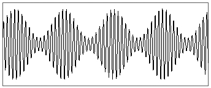
Radio Builder's Book
Figure 2.2 Diode receiver circuit with resonant circuit.
This radio is not very selective and doesn’t achieve much in terms of output volume. It’s
important to carefully adjust the antenna and rectifier; this can be achieved by adding tap
or connection points along the receiving coil. In section 2.2, a medium wave receiver is
described which uses adjustable matching.
You may wonder why a diode is necessary in a receiver circuit. To answer that one you
need to delve into a little bit of radio theory. A transmitter broadcasts high frequency electromagnetic waves into free space via a transmitting mast. The broadcast radiates in all
directions and induces a small signal in an antenna at the receiving location. Transmitters
that send on the medium wave band transfer their information, such as speech and music,
in the form of amplitude modulation (AM) of the carrier frequency. The radio frequency car-
rier amplitude changes in time with the low-frequency (baseband) voice or music signals.
Figure 2.3: Amplitude modulation.
The received radio signal remains inaudible even in headphones because our ears are only
sensitive to sound pressure waves up to about 20 kHz. The low-frequency signal carrying
the voice and music information needs to be recovered from the radio carrier wave. This
is where the diode comes in; using just one diode you can demodulate the RF signal. The
average current of the rectified signal corresponds to the original modulated AF signal.
● 12
Radio Builders Book - UK.indd 12
29-06-2023 16:09

Chapter 2 • Detector Radios
Figure 2.4: Demodulation using a rectifier.
The first detector radios used crystal detectors. Lead sulfide (galena) or a piece of pyrite crystal was used for this purpose. Both are sulfur compounds and occur in nature as ores
(lead ore; iron ore).
Figure 2.5 shows a crystal holder with a lead sulfide crystal from the early days of radio technology. A spiral spring made of steel wire known as a cat’s whisker contacts the crystal surface. The characteristics of the semiconductor junction formed at the crystal surface can be tested with an oscilloscope component tester. You will need to experiment a bit to find
a suitable spot on the crystal surface and to recognize a typical diode characteristic curve on the component tester trace.
Figure 2.5: An original detector crystal mount.
he crystal can be used successfully to build a diode radio. Numerous strong stations can
be heard without the need for any additional amplifier. Even today, it is possible to build a detector using these natural minerals. Pyrite forms regular, gold-colored cuboid crystals in rock. Lead sulfide is black with areas of metallic shiny facets on its surface. A sewing needle can be used as the cat’s whisker detector. You will need to test various points on the crystal surface until contact achieves a good rectification characteristic.
● 13
Radio Builders Book - UK.indd 13
29-06-2023 16:09

Radio Builder's Book
Figure 2.6: Naturally formed Pyrite and Lead sulfide.
2.2 Headphone Adapter
Vintage circuit diagrams for detector radios assume that headphones shown on the circuit
will be high-impedance types with 2000 Ω driver coils. These were standard back then.
Nowadays a typical set of headphones will use 32 Ω driver coils which will be too low
to function properly in the original circuit. You can, however, use a small transformer to
provide the necessary impedance matching. A transformer salvaged from a small mains
adapter can be used here. If the mains adapter has switchable taps, (3/4.5/6/9/12 V) on
the secondary winding you may be able to use these to optimize the impedance match.
Remove the transformer and connect the secondary winding to the headphones and the
primary winding to the circuit where the high impedance phones would normally be con-
nected.
In a diode radio, correct antenna matching is the key to success because you cannot afford
to waste any of the received RF energy. The receiver coil, therefore, has several tap points.
Using a total of 80 turns of 'Litz’ wire on a 10 mm diameter ferrite rod, makes sure you will be able to cover the entire medium wave band. Long antennas should be connected to a
lower tap of the coil to not overly dampen the resonant circuit at the input. Try connecting the long antenna to each of the winding taps to find which one gives the best reception.
Two coupling capacitors are also shown connected at the coil end. Experiment with the
aerial connection, a higher value of capacitance results in stronger coupling.
Figure 2.7: Low impedance headphones with transformer impedance matching.
● 14
Radio Builders Book - UK.indd 14
29-06-2023 16:09
Chapter 2 • Detector Radios
For such a simple radio, a good antenna is crucial. If your house is fitted with metal rainwater guttering, this can make a good antenna. The guttering should not have a connection to
ground potential. A zinc gutter will often be cemented into a drainage pipe near the ground
and thereby will be insulated. All you need now is a connection wire, and that should make
a really good antenna. In case the reception is still too quiet for headphones, you can con-
nect the output to a set of PC’s active speakers.
Another good antenna is sometimes the heating system of an apartment. Although the
pipes are usually grounded at some point, the total length of all the piping can effectively act as a loop antenna. In many cases, this can result in high received signal levels.
2.3 A Detector for Shortwave
Looking at old "plans" to build detector radios, they are usually designed to receive signals from local stations in the medium wave band. These stations are becoming rarer and may
even be unavailable now as more countries shut down their medium wave transmitters.
Some countries such as the UK, Italy, France, and Spain however still broadcast in the
band. Transmitting on shortwave has the advantage of covering much greater distances.
Many countries have their own international broadcasting services designed to inform and
entertain overseas listeners. The tried-and-true AM radio is, therefore, just as active on
shortwave as ever.
Tuning in to higher frequencies requires smaller coils which are much easier to make. While
a good medium wave coil needs a ferrite rod and a coil wound from hard-to-find 'Litz’ wire,
on shortwave, you can use standard insulated copper wire. A special coil former with a
ferrite core is not required; you can use any insulated wire.
For the first attempt, a coil with a total of 25 turns with four taps should be wound. I used the plastic body of a banana plug which measures 8 mm diameter but you could use a ball-point pen body. Two holes spaced 1 cm apart help to fix the wire ends. Then, wind 5 turns,
make a tap point, and apply the next turns. The finished coil connections can be soldered
to a 6-way pinheader strip.
Figure 2.8: Dual trimmer capacitor and shortwave coil assembly.
● 15
Radio Builders Book - UK.indd 15
29-06-2023 16:09
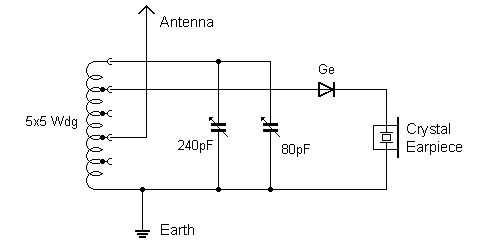
Radio Builder's Book
The entire radio can be built on an experimental plug board. Pins have been soldered to the
variable connections so that it can be easily plugged into the prototyping plug board. The
only thing missing is the diode and a headphone jack with soldered connection wires. The
advantage of this construction method is that it allows for easy experimentation to try out
other circuit mods.
Figure 2.9: Testing using a plug board.
The respective taps for the antenna connection and the diode on the coil can be experimen-
tally adjusted. This tuning capacitor is dual gang with both halves connected in parallel. If only the upper range above 10 MHz is to be received, the lower-valued half of the tuning
capacitor rated at 80 pF will be sufficient.
Figure 2.10: Schematic of the shortwave detector.
The radio requires a high-impedance headphone, such as a piezoceramic crystal earpiece
or dynamic headphones with a 2 kΩ resistor placed in series with each capsule. Low-im-
pedance 32 Ω types cannot be used directly and require an impedance transformer (see
Section 2.2). Medium-impedance headphones with 600 Ω can also be used directly.
A germanium or a Schottky diode can be used as the detector. Both of these diodes have
a low forward threshold voltage. A germanium diode also has reasonably low conductivity
in the reverse direction, which is important when using a high-impedance crystal earpiece.
● 16
Radio Builders Book - UK.indd 16
29-06-2023 16:09
Chapter 2 • Detector Radios
With a Schottky diode, the earpiece can become electrically charged like a capacitor. As the charge builds up the diode is completely reverse biased. In this case, an additional 100 kΩ
resistor should be connected in parallel with the earphone to dissipate any charge build up
to ground.
For best reception you need an aerial wire a good 10 m long suspended as high as possible.
But even a short 3 m length of wire hooked up high up around a room will provide reason-
able signal strength for initial trials. With careful tweaking of the tuning capacitor, several stations will be heard with sufficient volume, especially in the evening. Often you will hear two or three stations at the same time and tuning. The usual fluctuations in field strength
on shortwave reception mean that one station may be clearer than another at different
times of day. While individual radio bands are clear, nearby stations cannot be clearly sep-
arated. The selectivity of this radio design is not yet optimal.
The taps to the coil shown in the circuit diagram are only rough guidelines. Here you can
try to find the optimum balance between volume and selectivity, which is easily achievable
with the plug board construction method used here. The following rules of thumb apply:
• Lower taps points for the antenna and diode improve the receiver’s selectivity
but reduce output volume.
• Long antennas should be connected to one of the lower tap points. Connecting
to points higher up results in reduced volume and lower selectivity.
These relationships can be easily verified experimentally. Later on you will take a closer
look at the theory to support these general rules.
2.4 Silicon Diode Detector
Germanium diodes are rarely used nowadays. Silicon diodes are very popular for all sorts of
applications and the 1N4148 is the most commonly used universal diode. The circuit shown
in Figure 2.11 uses a silicon diode with an additional bias voltage applied. In addition, a
coupling capacitor is used here to connect the signal to an amplifier input.
Figure 2.11: Silicon diode detector with applied bias voltage.
● 17
Radio Builders Book - UK.indd 17
29-06-2023 16:09
Radio Builder's Book
A silicon diode requires a forward voltage bias of around 0.5 V before any significant current starts to flow. Since the received RF signal at the resonant circuit only rarely reaches such high levels, you may not hear any recovered signal. Germanium diodes, however, have a
forward voltage threshold below 0.2 V so that smaller signals can be recovered. To over-
come the high threshold of silicon diodes, you can set up a small DC current of about 10 µA
to flow through the diode. This will forward bias the junction allowing received signals below 100 mV to be demodulated.
Although the circuit can be operated directly with headphones, it works better with a speak-
er amplifier. A set of active PC speakers, for example, will work well here. The built-in
audio amplifier provides sufficient amplification and a high input resistance in the order of 100 kΩ. This results in less damping of the resonant circuit and gives better selectivity. In addition, compared to using headphones, you can connect the antenna to a lower tap on
the coil to improve selectivity and boost volume level.
2.5 Coils and Resonant Circuits
In order to build each circuit described here we’ve provided the necessary inductance and
specific measurements. However, sometimes you may need to modify the circuit or use a
different coil body; in that case, you’ll need to determine the number of turns yourself. It’s also possible that you have some old coils salvaged from redundant equipment that you can
modify and adapt. Regardless, it’s useful to know how to calculate coils yourself.
There are basically two types of coils: those wound on a magnetizable core (like ferrite
or iron powder) and those without a core, known as air-core coils. Let’s focus on air-core
coils first. For instance, a coil for a shortwave resonant circuit has 20 turns, a diameter
of 16 mm, and a coil length of 35 mm. It has an inductance of approximately 3 µH and,
when combined with a variable capacitor up to 300 pF, can reach a lower frequency limit of
around 5.3 MHz. We’ll show you how to calculate this and introduce a simple tool that can
make the process easier.
Figure 2.12: Air-core coil construction.
In general, the following formula applies to a long coil where l > D where n is the number of turns, A is the cross-sectional area in square meters, and l is the length in meters:
● 18
Radio Builders Book - UK.indd 18
29-06-2023 16:09
Chapter 2 • Detector Radios
L = µ0 * n² * A / l
where the magnetic field constant µ0 equals:
4
π * 10 –7 Vs/Am = 1.2466 * 10-6 Vs/Am
This formula actually only applies to an infinitely long coil but can be used as a useful
approximation up to a length of l =D. With a short coil of the same number of turns, the magnetic coupling between individual turns increases, resulting in a higher inductance.
Conversely, stretching out the turns reduces inductance, which can sometimes be used to
adjust coils.
The above formula can be simplified for a circular coil cross-section, where the diameter D
and length l of the coil are given in mm, to the following approximation formula:
L = 1 n H * n² × D²/mm² / ( l/mm)
This formula uses the approximation of π × π = 10 which introduces an error of approxi-
mately 1.3%. This is generally an acceptable simplification; you cannot expect high accu-
racy since the shape of the coil, especially the ratio of length and thickness, wire thickness, and even the location where the coil is mounted, all influence the final value of inductance achieved. In practice you can expect to achieve accuracy within 10% for an air-core calculation.
RF coil formers with ferrite screw cores are often used. The coil inductance increases by up to four times or more when a ferrite core is used. By changing the insertion depth of the
screw-in core the coil value can be adjusted. Ferrite cores are manufactured for use with
certain frequency bands in which they have lowest energy losses.
Much larger inductances can be achieved by using closed cores with or without an air gap.
The air gap reduces the inductance of the coil, but allows for greater magnetization, i.e.,
the core itself only reaches magnetic saturation at higher currents. Common types of cores
include ring cores, transformer cores in E-I shape, and closed pot cores.
Figure 2.13: Cross section of a ferrite E-I coil former with an air gap.
● 19
Radio Builders Book - UK.indd 19
29-06-2023 16:09
Radio Builder's Book
The inductance depends heavily on the number of turns, the material used, and the ge-
ometry of the core. A theoretical calculation, like for the air-core coil, is not so simple. The manufacturer will instead provide an AL value in nH/ n² for each type of core.
L = A L * n²
For example, an Amidon T37-2 ring core has an inductance of 40 µH at 100 turns, which
corresponds to an AL value of 4 nH/n². Reducing the winding to 30 turns, the inductance
becomes:
L = 30 * 30 * 4 nH = 3600 nH = 3.6 µH.
The ring core coil is suitable for building an RF resonant circuit, just like an air-core coil.
Besides the AL value, the intended frequency range of a core is also important. The Amidon
type xxx-2 has the color code red which indicates it is suitable for frequencies up to 30 MHz.
2.6 Resonant Frequency and Bandwidth
If you connect a coil and a capacitor, a resonant circuit is created. Electrical energy can
oscillate back and forth between the coil and capacitor, similar to the decaying swing of a
pendulum, the period of the swing indicates the resonant frequency f . The electrical circuit responds to a short pulse of current with a diminishing oscillatory voltage waveform.
The formula for calculating the resonance frequency is:
f = 1 / (2π√( L C))
Figure 2.14: A coil and capacitor form a tuned circuit.
Tuned circuits are often used in electrical circuits that process a range of different signal frequencies or mixed frequencies. Current and voltages that flow in such circuits will vary
according to the signal frequency. The parallel resonant circuit has a complex impedance
Z with a sharp maximum value at the resonant frequency f0. At this frequency, RC = RL
and the currents through the coil and capacitor cancel out exactly due to their total phase
difference of 180 degrees. An ideal oscillating circuit with no losses would have infinitely large impedance at the resonant frequency.
In practice however, damping of the oscillation occurs because of energy losses in the re-
sistance of the coil wire, magnetic losses of the coil core, and electromagnetic radiation,
resulting in a finite resonant resistance. To simplify you can add all the losses together and assign them as a parallel loss resistance R.
● 20
Radio Builders Book - UK.indd 20
29-06-2023 16:09

Chapter 2 • Detector Radios
Figure 2.15: A tuned circuit with loss resistance R.
Each resonant circuit has a property called the Quality factor or just Q which is inversely
proportional to the bandwidth of the circuit. Q can be easily determined when the parallel
damping resistance R is related to the inductive resistance RL = 2 π f L or to the capacitive resistance RC = 1 / (2πfC) at the resonant frequency.
Q = R / R L or Q = R / R C
If a resonant circuit is excited with a constant alternating current I of variable frequency, or through an alternating current source with high internal resistance, then the resonant
circuit voltage is proportional to the magnitude of the complex impedance Z. At resonance,
the voltage is highest. The smaller the damping of the vibration due to energy losses of any kind, or the larger the quality of the resonant circuit, the higher the resonant voltage rises.
On both sides of the resonant frequency, points on the resonance curve can be determined
at which the voltage has dropped to a factor of 1 / √2 = 0.707 = –3 dB. The frequency
separation of these points is referred to as the bandwidth b of the circuit. Between the
resonant frequency f0, bandwidth b, and quality factor Q of the circuit, the relationship is
b = f 0 / Q.
Figure 2.16: Response at resonance showing different values of Q.
Figure 2.16 shows the characteristic resonance curves of the quality ( Q) factor. At Q = 50, a larger bandwidth b 1 results than at Q = 110 with bandwidth b 2. At the same time, an increasing resonance peak is observed at higher quality. This causes the resonant circuit to oscillate more strongly at the resonance frequency. However, far away from the resonant
frequency, the resonance curves show little difference in their response.
● 21
Radio Builders Book - UK.indd 21
29-06-2023 16:09
The damping of the circuit, and therefore its quality, is practically always caused by intrinsic series and parallel resistances. The series resistance is due to the wire winding, but for a certain frequency, it is greater than the DC resistance due to the skin effect. The parallel resistance is determined by the connection impedance in the circuit. However, an iron or
ferrite core also has losses that can be represented by a parallel resistor. With the same
inductance, a coil with a core requires fewer turns and therefore incurs lower copper losses.
At the same time there are now losses in the core to consider. At very high frequencies of
around 100 MHz, pure air coils made of thick, silver-plated wire perform better, while at
medium frequencies of around 10 MHz, the best quality is achieved with a closed core such
as a toroidal core. Air coils, on the other hand, are an alternative down to about 1 MHz.
Coils and transformers used in the audio frequency range, however, are almost always built
with a core.
You can expect to get a quality factor Q of up to 100 by being careful with coil construction.
A resonant circuit is however also damped by the external circuitry to which it is connected to or by an antenna. This damping effect can to some extent be mitigated by ensuring a
loose coupling of the resonant circuit by using a small auxiliary winding, a tap point on the coil, or a suitable coupling capacitor. When a coil connects directly to the input of an amplifier, its input impedance should be very high to lessen the damping effect.
A small Visual Basic program can be found on the author’s website called LCFR which has
been written to simplify the calculation of coils and resonant circuits. The program calcu-
lates the inductance of air coils and coils with a known A L value. In addition, the resonance frequency, and the inductive resistance RL of the coil at this frequency can be determined if a value of capacitance is given in addition to the inductance. The program consists of a user interface made up of three independent calculation areas for practical reasons. Air coils can be calculated in the top section and coils with cores in the middle. At the bottom, you will find a calculation of the resonance frequency and the inductive resistance. Any change in
the input variables immediately updates the output result. The last calculated inductance
of a coil is automatically transferred to the lower calculation. The program is useful for
quickly trying out new parameters. The displayed three decimal places for the inductance
value should not be interpreted as an indication of the calculation accuracy but makes it
simpler to show the calculation of coil characteristics in a wide range from a few nH (1 nH
= 0.001 µH) to many mH (1 mH = 1000 µH).
● 22
Radio Builders Book - UK.indd 22
29-06-2023 16:09
Chapter 2 • Detector Radios
Figure 2.17: Calculation of coil characteristics.
If you want to build a specific resonant circuit, you could start by specifying the capaci-
tance, then calculate the inductance, and finally determine the number of turns for a given
core or coil form. It often works better however if you are less systematic, meaning you
choose a type of coil and then try different inductances and capacitances until you get the
desired result. For example, you might ask what standard values of a fixed inductor and
capacitor can be used to build a resonant circuit that has a specific resonant frequency in a given circuit. In this case, trial and error can often get you to the desired result faster than a more conventional systematic approach.
Here are a few examples:
To wind a coil with 300 µH for a medium-wave detector radio on a cardboard roll with a
diameter of 42 mm, assuming a wire diameter of 0.5 mm, you would need about 90 turns.
The tuning capacitor must be at least 320 pF to tune the medium-wave range starting from
530 kHz.
For higher frequencies, you need fewer turns. For example, a coil in a shortwave receiver
has 25 turns, a diameter of 8 mm, and a coil length of 10 mm, resulting in an inductance
of 3 µH. With a capacitance of 320 pF, you can tune down to 4.4 MHz.
The previous examples used air coils. But how can you use a ferrite core? Often you don’t
have exact data on the core material properties, so you have to estimate by how much
the core increases the inductance or decreases the frequency. For a coil in the shortwave
range, with n = 18 turns, L = 12 mm, and D = 8 mm, you can estimate an inductance of about 1.7 µH and a frequency of 7.3 MHz using a capacitance of 275 pF for an air coil. With
a variable capacitor of 275 pF and a fully inserted ferrite core, experiments show a lower
frequency limit of 3.7 MHz, or an inductance of about 6.8 µH. Using an adjustable screw
core, the frequency can be halved, and the inductance can be increased up to four times.
Similarly, a longer ferrite rod for the medium-wave range can increase the inductance by
about ten times. Roughly speaking, for a coil on a ferrite rod to achieve the same induc-
tance requires only about one-third of the turns of an air coil of the same size.
● 23
Radio Builders Book - UK.indd 23
29-06-2023 16:09
The resonant frequency of a resonant circuit can change significantly when installed in the
circuit. Especially at higher frequencies, line capacitances, for example, can have an effect.
For this reason you often have to make corrections afterwards or plan for adjustment op-
tions from the beginning, such as using screw cores or trimmers. For large changes, the
following rules of thumb, which can be derived directly from the formulae given and can be
simulated with the LCFR program, often help: doubling the number of turns causes qua-
druple the inductance and half the frequency with the same value of capacitance. So, the
frequency is inversely proportional to the number of turns. On the other hand, the frequen-
cy is inversely proportional to the square of the capacitance. Therefore, you can double the frequency with a quarter of the capacitance value. For example, to tune a frequency range
from 1 to 3 using a variable capacitor, the capacitance ratio must be at least 1 to 9.
Let’s take a closer look at the achievable bandwidth and quality with an example. Let’s say
you have a shortwave resonant circuit with L = 3 µH, C = 240 pF, f = 5.9 MHz, RL = RC =
112 Ω. With a thick wire or a good ferrite core, you can achieve an unloaded quality factor
( Q) of 100, which means the unloaded bandwidth would be about b = 6000 kHz / 100 =
60 kHz. The resonant resistance would be 112 Ω × 100 = 11.2 kΩ, say roughly 10 kΩ.
The actual losses, caused by copper resistance, are around 1 Ω, while the DC resistance is
much lower. However, the effective loss resistance increases due to skin effect, where the
RF current migrates to the thin outer layer of the conductor. To reduce losses, coils for the medium and long wave bands are usually wound with multi-stranded, individually insulated
copper wires called "RF-Litz" wire.
In a crystal receiver, the working Q factor shouldn’t be set too high to get a good output volume. By loading the circuit with about 10 kΩ in parallel, you can achieve good power
matching and volume, with a working value of Q = 50 and a bandwidth of 120 kHz. This example indicates that neighboring stations within a band will not be separated. The actual
value of Q also depends on the antenna used and its coupling.
2.7 The Vacuum Tube Detector
In addition to semiconductor diodes, there are also tubes that can serve the same function. A typical tube diode that can be used as an RF detector is the EAA91. This is a dual diode with a heater voltage of 6.3 V/0.3 A. Unlike a germanium or Schottky diode detector, a radio built using this type of detector consumes a continuous 1.8 W of power just to recover the signal.
Unlike a germanium or silicon diode or even the crystal detector made from galena, the
tube diode does not require the signal to exceed a minimum voltage threshold before cur-
rent starts to flow. Even without a positive anode voltage, some electrons will find their
way to the anode. A short-circuit current of about 30 µA can be measured. With a load re-
sistance of 1 MΩ, the tube has a grid voltage of 0.5 V, thereby creating its own appropriate bias voltage.
Using the two diodes in the tube together with a twin gang tuning capacitor (one range
value covers shortwave while the other is suitable for medium wave) and a few other com-
ponents, you can build a dual-band radio covering both medium wave and shortwave. This
essentially builds two completely independent radios, with band switching occurring after
● 24
Radio Builders Book - UK.indd 24
29-06-2023 16:09

Chapter 2 • Detector Radios
rectification. The output signal can then be fed to, for example, a set of PC active speakers.
The selectivity is good in both frequency bands because the rectifier circuit has very high
impedance.
Figure 3.18: Tube Detector for two wave bands.
The two-band radio is coupled to the antenna through small coupling capacitors of around
30 pF. With a sufficiently long antenna, you can receive numerous stations. Distant Europe-
an stations can be heard on shortwave and medium wave, especially in the evening.
2.8 Diode Radio with Active Regeneration
You have seen that a simple shortwave detector is not very sensitive or selective but with
the help of a regeneration circuit, its performance can be significantly improved. The ad-
ditional circuit can compensate for losses in the oscillator circuit. With this design, the RF
signal is amplified by a transistor and fed back (in phase) into the oscillating receive coil.
With carefully adjusted amplification, the feedback can compensate for all losses. In this
state the oscillating circuit will be optimally damped and have a very high quality factor up to about Q = 1000. This high Q factor means that broadcast stations only 10 kHz apart can be separated and very weak stations will be easily picked up.
Figure 2.19: Detector with added feedback.
● 25
Radio Builders Book - UK.indd 25
29-06-2023 16:09
Radio Builder's Book
The regeneration feedback is produced here using an NPN transistor but you could also use
a tube. Even with this regeneration circuit the radio is still classed as a detector receiver.
It’s only when the tube or transistor itself also replaces the function of the detector diode that the radio becomes an Audion receiver. Audion refers back to Lee De Forest’s patent
which turned out to be the prototype of the triode vacuum tube. Up until then crystal de-
tectors were all you had to demodulate radio signals. De Forest’s Audion tube took care of
demodulation and amplification of the recovered baseband signal.
The feedback circuit used here could essentially be almost any oscillator circuit. Here, a
Hartley oscillator with emitter feedback is used because the necessary coil taps are already available on the receiver coil. An alternative is the circuit shown further down in section 4.4
which uses two PNP transistors.
Figure 2.20: Testing the design built on a breadboard.
This circuit can be easily connected to an amplifier, such as a set of active PC speakers,
making it a great shortwave radio. The antenna doesn’t need to be very long — a roughly
one meter long whip should do. To use the receiver, you tune it to a station and adjust the
regeneration level until good output volume is achieved. If you crank up the regen pot too
far, the set will burst into oscillation and what you thought was a receiver has now become
a small carrier wave transmitter. The coil providing the feedback to the receiver coil is also known as a 'tickler’ coil and can be electrically separate from the main coil.
When properly adjusted, the regenerative receiver can hold its own against any conven-
tional shortwave radio. The audio is quite pleasant, and unlike a simple superheterodyne
radio, there are no interference noises due to poor image rejection. During periods of
strong signal fading, there isn’t any unpleasant sound distortion, just temporary reductions in signal strength.
For those who think that a detector receiver using a battery and amplifier is cheating, don’t worry — you can remove the battery and connect a crystal earphone instead. The radio still
functions without the active regeneration signal, but with far less sensitivity.
● 26
Radio Builders Book - UK.indd 26
29-06-2023 16:09
Chapter 2 • Detector Radios
2.9 Regeneration using Tubes
Instead of a transistor, a tube can also be used to reinforce the oscillations in the resonant circuit. Figure 2.21 shows just such a circuit using an EC92 tube. In addition to the anode
voltage of 12 V, a filament voltage of 6 V is also required. The circuit shows a great simi-
larity to the corresponding transistor circuit shown in Figure 2.19. The RF signal is applied to the grid via an RC network. The amplified RF current is coupled back into the resonant
circuit via a tap. To adjust the regeneration level here, you can change the anode voltage.
Figure 2.21: Regeneration using an EC92 triode.
In this circuit, te triode EC92 is operated with a low anode voltage of maximum 12 V, al-
though it is actually intended for operation with voltages from 100 V upwards. The achiev-
able amplification is however still sufficient for our purpose here. At low anode voltage,
the tube has only a small usable slope range. Therefore, it must be placed directly in the
resonant circuit, i.e. the grid is at the hot end of the resonant circuit, and the cathode is a tap approximately in the middle of the coil.
Almost any other triode can be substituted for the EC92. Double triodes such as the ECC81
or ECC82, which can be operated with a heater voltage of 12 V, are also well suited. If both halves are connected in parallel, the slope characteristic doubles. If the amplification is not sufficient with one tube and no oscillation can be observed even with the feedback control
turned fully up, a smaller grid resistor should be used. The tube then enters the range of
lower grid bias and higher anode currents.
A pentode can also be used; Figure 2.22 shows a circuit using an EF95. Here, the anode
is fixed at the operating voltage, while the screen grid voltage is adjusted to change the
characteristic slope. A relatively small 10 kΩ grid resistor guarantees safe oscillation even with strong antenna coupling. The tube circuit is already largely similar to the regenerative tube receiver described in section 3.5.
● 27
Radio Builders Book - UK.indd 27
29-06-2023 16:09
Radio Builder's Book
Figure 2.22: Regeneration using an EF95 Pentode.
● 28
Radio Builders Book - UK.indd 28
29-06-2023 16:09
Chapter 3 • Tube Regenerative Receivers
Chapter 3 • Tube Regenerative Receivers
Listening to distant radio stations or 'DXing’ is a hobby which gained popularity after the
introduction of the regenerative receiver design. This type of receiver was usually built
using one or two tubes together with a tuning capacitor to adjust the reception frequency
and a feedback control to control the oscillating regeneration circuit. Those who became
experts at tweaking the controls were able to draw down the faintest of signals from the
ether. During the subsequent era of superheterodyne receivers, it was easy to forget just
how well the simpler regenerative receiver can perform. A good shortwave receiver working
on this principle can be built using just one or two tubes.
3.1 Triode AM Receivers
As mentioned above, an Audion receiver is characterized by the fact that both RF demod-
ulation and signal amplification are performed with just one active device. This provides
better sensitivity and more amplification overall. The one valve shortwave radio shown in
figure 3.1, therefore, has significantly more sensitivity than the tube detector receiver. The circuit can be used with either an EC92 or an ECC81 vacuum tube. For this simple circuit, a
high-impedance earpiece of at least 600 Ω is required
Figure 3.1: A simple triode Audion receiver.
Two different processes contribute to the demodulation of the RF signal. Grid rectification
is based on the rising grid current at positive input voltage. Anode rectification is based on the curvature of the I a / V g characteristic curve of the tube. Depending on the tube and its operating point, one of the two rectification processes predominates.
Anode rectification
The characteristic slope of a tube depends on the grid voltage and increases with increasing input voltage. The non-linearity of the characteristic curve causes the average anode current to increase with increasing RF amplitude. It is easy to see that effective demodulation is only possible if the input voltage swing is not too narrow. Very small signal excursions
will only drive the tube over a more linear region of the curve so that the rectification effect will be smaller and the recovered baseband will have lower amplitude.
● 29
Radio Builders Book - UK.indd 29
29-06-2023 16:09

Radio Builder's Book
Figure 3.2: Anode demodulation.
Grid Rectification
The grid-cathode structure forms a rectifier. As the RF input voltage increases a larger grid current flows, which charges the grid capacitance negatively. This reduces the average anode current. The output signal is thus exactly out of phase with anode rectification. Again, a non-linear characteristic curve is responsible, this time the grid current characteristic curve.
The limited non-linear region ensures, as with a semiconductor diode, that significant de-
modulation only occurs at sufficiently large signal amplitudes.
It is not easy to predict which of the two effects predominates in practice. However, a
assessment can be made based on the phase of the output signal. Figure 3.3 shows a
measurement of an AM receiver using the ECC82. The lower channel shows an amplitude
modulated RF signal directly at the control grid, and the upper channel shows the voltage
at the anode. It can be seen that the anode voltage drops when the RF amplitude is large.
Here, the tube is therefore operating in anode rectification mode, i.e., the grid current plays no significant role.
Figure 3.3: Anode voltage and grid voltage with anode rectification.
● 30
Radio Builders Book - UK.indd 30
29-06-2023 16:09
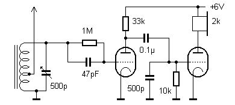
Chapter 3 • Tube Regenerative Receivers
Figure 3.4 on the other hand displays the results using an EF95 pentode in an Audion con-
figuration. As you can see, the average grid voltage actually decreases with larger RF sig-
nal levels, meaning that the grid capacitor is charged negatively. Consequently, the anode
current decreases and the anode voltage increases. In other words, the tube functions as
a grid rectifier.
Figure 3.4: Anode and grid voltage by grid rectification.
In a given circuit, the type of demodulation depends on the tube, its operating point, the
grid resistor, the grid capacitor, and the current modulation frequency. If the grid time constant is large, the grid voltage will not be able to keep up with a high modulation frequency.
There may therefore be frequency ranges where both effects cancel each other out, result-
ing in little or no signal demodulation.
Both operating attributes of the Audion based on non linear characteristics make it clear
why the audio amplitude increases disproportionately with the RF amplitude. As a result,
weaker stations are practically inaudible because the carrier amplitude is not sufficient to produce any significant demodulation. This weakness can be overcome by adding feedback
to the circuit as described in section 3.3.
3.2 A Two-stage Receiver
Without using any deliberate feedback, good results can be achieved by increasing the
overall gain of the receiver by just adding a second stage. Figure 3.5 shows a tested circuit in the medium-wave range with a low-voltage ECC86 tube, which can operate with an anode voltage of only 6 V. A high-impedance earpiece was used for testing.
Figure 3.5: A 2-stage Audion using an ECC86.
● 31
Radio Builders Book - UK.indd 31
29-06-2023 16:09

Radio Builder's Book
Similar Audion circuits can be built with other types of multiple tubes. Some of the more
suitable are the combined Triode/Pentode type ECFxx or ECLxx family of devices, or their
US equivalents. Figure 3.6 shows an example using an ECF12 steel tube. In this example,
the pentode section of the tube is used to provide AF amplification. The output volume is
strongly dependent on the anode voltage. Using this design to receive signals on the short-
wave band and with an anode HT of 24 V provides an adequate volume level.
Figure 3.6: An Audion built with a single ECF12.
A circuit without feedback cannot be as selective as a regenerative receiver in the short-
wave range. However, it can provide good volume and sound quality.
Figure 3.7: Experimental Audion using a steel vacuum tube type ECF12.
3.3 Audion Receiver with Regeneration
The design of a typical vacuum tube Audion type radio will most likely incorporate regener-
ation. This combines the demodulation technique described in section 3.1 with the oscillator circuit regeneration used in the detector receiver described in section 2.9. Altogether
this makes a single tube responsible for three tasks at the same time: regeneration,
demodulation, and amplification. The result is good reception performance with little outlay.
● 32
Radio Builders Book - UK.indd 32
29-06-2023 16:09
Chapter 3 • Tube Regenerative Receivers
The ECC81, like the ECC82, is not specifically intended for low-voltage operation but works
well from a single 12 V supply to power the heater and also the anode HT. Both these
tubes can have their two heaters wired in parallel for 6.3 V / 0.3 A operation or in series
from 12.6 V / 0.15 A. When the heaters are connected in series, a single 12 V battery is
sufficient for heating and the anode HT voltage. In this regard, the ECC81/82 is superior
to the ECC86 low-voltage tube, which only works with the heaters in parallel. The ECC83,
which can also use 12 V for the heater, is not suitable for the receiver due to its very low anode current.
Feedback has already been introduced in the active regeneration of the oscillator circuit
in the detector receiver and also leads to better selectivity and sensitivity with an Audion.
Feedback means that the RF signal is amplified, phase-corrected and fed back to the re-
ceive coil circuit. The same principle is also used in a conventional oscillator circuit to maintain oscillation. In the radio receiver, the feedback signal reinforces the receive signal via a variable coupling to the coil or by an adjustable gain circuit so that the amount of feedback can be finely adjusted. As the feedback is increased and just before the onset of self-oscillation, any weak RF signal received on that frequency will undergo maximum amplification.
In practice the resonant circuit is damped by various energy losses in the circuit. These include losses due to wire resistance, the finite input resistance of the tube and the damping effect of the antenna. All of these losses can be compensated for by feedback, theoretically you get a resonant circuit with infinite Q factor. In practice, a Q factor of up to 10,000 can be achieved, resulting in a narrow bandwidth of, for example, 600 Hz in the 6 MHz band.
This leads to a reduction of the sidebands or an increase in the lower modulation frequen-
cies. In fact, with the help of regeneration it is possible to achieve selective amplification of the carrier signal, which gives improved demodulation sensitivity.
The feedback arrangement can be accomplished in many ways. Practically any oscillator
circuit can be used to supply the regeneration signal. Here, the particularly simple three-
point circuit with feedback via the cathode is used, which only requires a tap point on the
resonant circuit coil. The degree of coupling depends on the position of the tap and is a
maximum when the tap is at the midpoint of the total coil length. With sufficient amplifica-
tion by the tube, you only need about 1/10th of the total number of turns of the coil for the feedback winding. However, in order to achieve oscillation even with low anode voltage and
a not too loose antenna coupling, the tapping is placed at the midpoint. When experiment-
ing yourself it is always useful to add a number of extra tap points when winding the coil.
They are far more difficult to add after the coil is finished and in use.
It is important that the feedback can be adjusted until oscillation sets in. If the antenna
coupling is too strong or if the coil has too much resistance, it may be that the amplification provided by the tube is not sufficient to compensate for all the losses in the circuit. In fact, in the medium wave band, it is usually easy to achieve oscillation due to the high impedance at resonance, while on shortwave, a coil with lower losses will be necessary.
● 33
Radio Builders Book - UK.indd 33
29-06-2023 16:09
Radio Builder's Book
Whether a tube with a given slope achieves enough amplification to sustain oscillation can
be illustrated by an example. At 6 MHz and 300 pF, the capacitive resistance will be approx-
imately 90 Ω. With an unloaded Q of 100, the resonant resistance of the resonant circuit is 9 kΩ. The impedance at the cathode tapping is only a quarter of that, or about 2.25 kΩ,
if the tapping is exactly at the midpoint. In order for amplification greater than one to be possible, the slope must be at least S = 1/2.25 kΩ, or at least about S = 0.44 mA/V. Especially in tube circuits with reduced anode voltage, a high unloaded Q of the resonant circuit is therefore important. In particular, the shortwave coil should be wound with thick wire
approximately 1 mm in diameter.
Figure 3.8: An Audion with feedback.
The level of feedback is adjusted by changing the anode voltage which affects the charac-
teristic slope and tube amplification. The 100 kΩ feedback potentiometer allows for very
precise control and the circuit achieves smooth oscillation onset. If the antenna coupling
is too strong however, the tube may not have enough amplification to provide adequate
feedback. In this case, weaker antenna coupling or a smaller grid resistor may provide
more amplification.
The Q factor achieved after the effect of regeneration can be estimated by determining the bandwidth. At optimal settings, the Audion can easily separate stations with a channel
spacing of just 10 kHz. The bandwidth is about 6 kHz, and higher modulation frequencies
are noticeably suppressed. In the 6 MHz band, this results in an effective quality factor of 1000 and a resonant resistance of about 100 kΩ. The damping effects of the antenna and
the tube’s internal resistance are compensated for by the feedback. The actual Q factor depends on the exact feedback adjustment. Near the oscillation threshold, an even higher
Q factor can be achieved, but the volume stops increasing at a certain point because the sidebands are no longer boosted.
This Audion with regeneration already provides reception capabilities that can compete with
a simple superheterodyne receiver, especially because it does not generate an image fre-
quency during demodulation and has good rejection of strong receive signals. For a listener
the Audion is a really enjoyable receiver, especially in the evening when excellent long-
range reception can be achieved with just a 3-meter length antenna. With interchangeable
plug-in coils, multiple wavebands or spread shortwave bands can be implemented. Receiv-
ers for individual amateur radio bands are also possible. With feedback engaged CW and
SSB signals can be received, which is only otherwise possible by using a superheterodyne
receiver with a beat frequency oscillator (BFO).
● 34
Radio Builders Book - UK.indd 34
29-06-2023 16:09
Chapter 3 • Tube Regenerative Receivers
An SSB (Single Sideband) transmitter doesn’t transmit a carrier wave, but only the lower
or upper sideband. When you listen to it on an AM (Amplitude Modulation) receiver, you’ll
hear an indistinct noise. The receiver has to add the carrier wave back at the exact fre-
quency. If it’s not tuned precisely, voices will sound distorted a bit like Mickey Mouse. In the 80- and 40-meter band the lower sideband is used, so the receiver needs to be tuned
slightly above the receiving frequency. You’ll usually have the best results in the 40-meter band at around 7050 kHz.
At the lower end of the band, around 7000 kHz, you›ll hear CW (Carrier Wave) transmit-
ters. These use unmodulated carriers that are turned on and off to transmit Morse code
messages. To hear anything, you need to superimpose the input signal with a second sig-
nal. To do this, you need to detune the receiver using a feedback frequency about 500 Hz
to 1 kHz below or above the receive signal. The exact adjustment determines the audible
pitch. A deviation of 800 Hz also creates a beat frequency of 800 Hz. When you tune it
exactly to the received signal carrier, nothing will be audible.
Figure 3.9: The ECC81-Audion built on a wooden breadboard.
An important characteristic of a good regenerative receiver is soft onset of the feedback
state. A harsh, sudden onset makes tuning difficult and produces distortion. For a gentle
onset, it’s important to have effective automatic gain control for high signal amplitude at
resonance. Current flow in the grid increases the grid’s negative charge. It’s often the case that self-oscillations stop just above the critical point when tuned to a strong signal. The large signal amplitude of the useful signal itself reduces the gain. However, this only works with a relatively short grid time constant.
● 35
Radio Builders Book - UK.indd 35
29-06-2023 16:09
Radio Builder's Book
If the grid capacitance is increased, for example, to a value of 1 µF, fine tuning becomes
impossible. It leads to swings in the oscillator gain with crackling noises. With each new
oscillation attempt, the tube reaches a working point with higher anode current and higher
slope, which amplifies the feedback. The oscillation then becomes larger until it gets cut off by a strong grid charge. Using a small grid capacitor below 1 nF ensures the gain is throt-tled back quickly enough to stabilize the amplitude.
Both processes responsible for demodulation in the tube, namely grid rectification and
anode rectification, work together here. While the anode current characteristic curve in-
creases the current with modulation, the rising grid current reduces the anode current by
negatively charging the grid. This regulation even works like automatic gain control (AGC)
to some extent and partially regulates field strength fluctuations automatically.
The circuit shown here was used with minor changes and an ECC82 in the anniversary
edition of the Radiomann 2004 experiment kit from Kosmos They have paid particular
attention to recreate a feeling of the 1940s with the look and feel of this kit. Plug-in coils allow for band switching. A cylindrical coil is used for the shortwave band, and a flat coil for medium wave reception.
Figure 3.10: The Kosmos-Radiomann kit fitted with a medium wave coil installed.
● 36
Radio Builders Book - UK.indd 36
29-06-2023 16:09
Chapter 3 • Tube Regenerative Receivers
3.4 Loudspeaker Operation
The following circuit was developed as an extension of the Kosmos-Radiomann receiver.
The original receiver design with an ECC82 and headphones output can be converted to
speaker output with minimal changes. This was achieved using a PCL86 running at an an-
ode voltage of 60 V. The triode section acts as the audio stage. Due to the higher anode
voltage, the anode resistor should be increased to 100 kΩ, which achieves greater voltage
gain. Like the original, this receiver is classified as a 0V1, which means it’s a receiver without an RF preamp, with an Audion stage and an AF stage.
Figure 3.11: Loudspeaker operation using a PCL86.
The power pentode in the PCL86 composite tube delivers around 5 mA of anode current at
60 V, which is adequate for speaker operation. The 20:1 ratio output transformer can be
used as is. The output tube then operates into an output impedance of 8 Ω × 400 = 3.2 kΩ.
While the original radio was powered by batteries, a simple external power supply needs to
be used here. The PCL86 has a heater rating of 13 V/300 mA, so you could salvage a power
transformer from an old 12 V halogen desk lamp, for example. The anode voltage is gener-
ated by a voltage multiplication network. To achieve the best possible hum-free operation,
the screen grid voltage and the operating voltage for the audio stage are smoothed with
an additional RC filter. The receiver provides good sensitivity and volume on both bands.
3.5 A Regenerative Receiver using two EF95 Tubes
Usually, when a pentode is used in an Audion receiver design it results in greater gain levels than when using a triode. That’s why the EF95 is used here. This design uses the second
EF95 as an AF (Audio Frequency) amplifier.
● 37
Radio Builders Book - UK.indd 37
29-06-2023 16:09
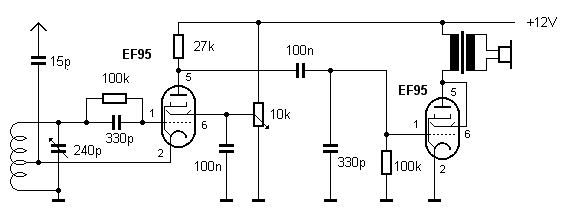
Radio Builder's Book
Figure 3.12: EF95 Audion with AF-Stage.
The audio tube operates in triode mode with capacitor coupling to the headphones or an
external audio amplifier. Using high-impedance headphones, the volume is sufficient; even
32 Ω headphones can be driven directly.
For more volume, the audio stage impedance matching needs to be improved. A small
mains transformer is connected to the output to act as a signal impedance transformer. For
example, a small power transformer with a rating of 230 V/24 V (120 V/12 V in the US) will
be suitable. The winding ratio is about 10:1, so the impedance ratio is 100:1. If both drivers in the headphones are connected in parallel, their combined impedance is 16 Ω. From the
tubes point of view it is now operating into a 1.6 kΩ load. This produces better matching
to the high internal resistance of the tube output and leads to improved output power. A
multi-tap output mains transformer is suitable to use as this impedance transformer .A
power transformer salvaged from a plug-in mains adapter with switchable output voltages
between 3 V and 12 V could also be used.
Figure 3.13: Impedance matching using an output transformer.
The radio was built on the RT100 tube experimentation system from AK Modul-Bus. This
system allows for experiments to be carried out on a plugboard. A variable capacitor,
potentiometer, power supply connection, and audio jacks are included in the kit. For the
shortwave range, a wire coil with two sets of 10 turns of single-strand wire is sufficient,
which can be free wound without a supporting coil former.
● 38
Radio Builders Book - UK.indd 38
29-06-2023 16:09
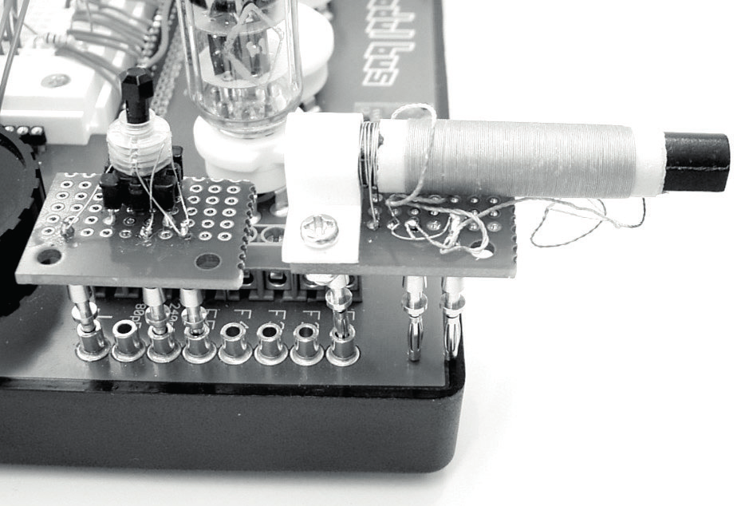
Chapter 3 • Tube Regenerative Receivers
Figure 3.14: The regeneration stage wiring.
The variable capacitor connections terminate at the screw terminals and gold-plated 2 mm
sockets. This conveniently allows coils for different frequency bands to be terminated in
2 mm plugs and plugged in as required, without generating any additional losses.
Figure 3.15: Plug-in coils for short and medium wave operation.
Figure 3.15 shows two plug-in coils mounted on perforated circuit boards. The shortwave coil has an adjustable ferrite core and a total of 20 turns with a center tap. The medium
wave coil uses a small ferrite rod with 80 turns of RF 'Litz’ wire. On top of this is a small 10-turn coupling coil of enamel-coated copper wire.
● 39
Radio Builders Book - UK.indd 39
29-06-2023 16:09
Radio Builder's Book
3.6 A Shortwave Audion Type 0V2
This vacuum tube Audion regenerative receiver design was developed with the aim of build-
ing a sensitive shortwave receiver for speaker operation whilst using a safe anode voltage.
This particular design is termed '0V2’, which classifies it as a receiver with one regenerative stage and two AF stages. The same circuit functioned using almost the same component
values but with an EF80 tube running on only 12 V. At 70 V, however, much more volume is
achieved. At the higher voltage, the grid resistor must have a higher value. The EF80 was
replaced by an EF183 which offers more gain and higher maximum frequency operation.
Now it is a fully-fledged radio that performs rather well when compared with a tube super-
heterodyne radio. The 70 V anode voltage is considered safe, so no special precautions are
necessary.
Figure 3.16: The three-stage Audion receiver.
Often, the feedback signal is picked up from the anode contact and fed to a special coupling coil. However, with an indirectly heated tube, it’s easier to connect the cathode to a tap on the resonant circuit coil. This gives us the basic circuit of a classic 'cathode 3 point oscillator’ or, if it’s a pentode, the so-called ECO circuit (Electron Coupled Oscillator). The amount of feedback applied is controlled by varying the characteristic slope. With a triode, this is achieved by changing the anode voltage; with a pentode it’s done by changing the screen
grid voltage. The audio stages don’t need a cathode resistor here because the operating
voltage is relatively low. The negative grid bias is automatically generated by the grid current as a voltage drop across the grid resistor.
From the 1950s to 1970s, the ECO Audion was very popular receiver design among radio
amateurs as the classic "beginner’s project". Plug-in coils were usually fitted to cover the various amateur radio bands. The sensitivity of the design is so good you can easily pick up long-distance stations, even with the relatively low anode voltage of just 70 V.
The coil has 20 turns with a tap at the 4th and 7th turn. The frequency range can be
tweaked by adjusting the ferrite screw slug. The receiver covers the 49-m to 31-m band.
However, you can also hear SSB voice communication and telegraphy in the 40-m amateur
radio band. The antenna can be connected either directly to the lower tap or with loose
coupling via an additional antenna capacitor. Any wire over one meter long can be used as
an antenna.
● 40
Radio Builders Book - UK.indd 40
29-06-2023 16:09
Chapter 3 • Tube Regenerative Receivers
The volume is more than adequate. With stronger transmitters, the volume needs to be
turned down. You can listen to a station all day long. In the evening, the range increases
and more distant overseas stations will also be received. The feedback oscillation onset
is very soft and only lightly dependent on the frequency. So, you can find some settings
where only the tuning capacitor needs to be adjusted. However, if you want to receive a
weak station in amongst stronger ones, you have to maximize the gain and selectivity by
setting the feedback as close to the oscillation threshold as possible.
3.7 A 6 V Tube Regenerative Receiver
The goal of this circuit is to create a regenerative receiver that operates from a single HT
voltage of only 6 volts. For this purpose, an EL95 tube will be used, which can often be
easier to find than the low-voltage tube types ECC86 or EF98. The EL95 also works very
well with a low anode voltage of only 6 volts.
Good results have also been produced with a simple Electron Coupled Oscillator (ECO) cir-
cuit using a low anode voltage. The slope characteristic of the tube is controlled by adjusting the screen grid voltage. In this case, the screen grid can be grounded via a capacitor
for both RF and audio frequencies because the demodulated audio signal feeds out from
the tube’s anode. The system of cathode-control grid-screen grid can be thought of as a
triode system that is only responsible for adding regeneration to the receiving circuit and
for demodulation.
Figure 3.17: Single stage ECO Audion.
At the low anode voltage of 6 V, the tube has a low transconductance. Therefore, the Au-
dion can only be brought into oscillation if the resonant circuit has a very high unloaded Q
factor. This requires a large air-core coil made with thick wire. Similar care is required as with free-running oscillators in amateur radio equipment. Also make sure the antenna coil
is loosely coupled.
● 41
Radio Builders Book - UK.indd 41
29-06-2023 16:09
Radio Builder's Book
Figure 3.18: Shortwave Audion using an EL95.
This regenerative receiver can be used to receive Digital Radio Mondial (DRM) broadcasts
where available. In this application, good frequency stability is crucial for reliable reception, and this all comes down to the oscillator circuit design. To achieve the required level of stability, you need a large 20 turn coil of 1.5 mm diameter wire wound onto a length of
18 mm diameter PVC pipe. All connections must be as short as possible especially between
the coil and the air-spaced variable tuning capacitor. With careful construction a Q factor of over 300 was obtained. All other connections should be kept mechanically secure. Nothing
can be allowed to wobble or physically vibrate. Even the tube is physically secured on its
glass top spike to reduce vibrations.
The receiver is best operated with an external audio amplifier or connected to a PC sound
card. It is also possible to listen in directly using a high impedance headphone. With just
one stage, clear reception of numerous shortwave stations can be achieved.
3.8 Cascode Triode Regeneration
The cascode regenerative receiver has proven itself particularly useful in the field of ama-
teur radio. Back in the 1950s and 1960s, it was a popular radio design and proved a good
introduction into receiver technology for many budding radio enthusiasts. Often, an ECC81
was used, with the receiver running at 250 V.
In general, triodes are less noisy than pentodes. The additional grid structures in a pentode such as the screen and suppressor grid can introduce more noise into the circuit. Pentodes,
however, have a higher voltage gain and lower feedback capacitance. The cascode config-
uration combines the advantages of both characteristics. For this reason, it was often used
for VHF preamplifiers in television receivers, where high input sensitivity is crucial. What applies for an RF preamplifier also applies for a regenerative receiver.
● 42
Radio Builders Book - UK.indd 42
29-06-2023 16:09

Chapter 3 • Tube Regenerative Receivers
Figure 3.19: The cascode amplifier configuration.
The cascode regenerative receiver design uses the cascode configuration with feedback
applied via the cathode. The feedback potentiometer changes the grid voltage of the upper
tube, and thus the anode voltage of the lower triode, which changes the characteristic slope of the circuit. The feedback can be adjusted to just on the verge of oscillation, so that the input circuit is optimally stimulated. An antenna signal of just a few microvolts can be amplified to several hundred millivolts of RF signal, resulting in high selectivity and bandwidths of around 5 kHz with high gain.
Figure 3.20: The cascode Audion regenerative configuration.
When using tube receivers with low anode voltages, triodes (ECC82 in the case of radios)
or pentodes (EF95 in the RT100) are often employed. At first glance, the cascode configu-
ration has a significant disadvantage: it halves the already-low anode voltage. That’s why
a special tube such as the ECC88 is required that can handle this.
Most tubes are designed for use with anode voltages between 100 V and 300 V but the
legendary ECC86 was developed to operate at low anode voltages such as 6.3 V or 12.6 V.
Back in the day, before transistors became commonplace, the goal was to design a car
radio that didn’t need a voltage inverter to generate the high voltages normally used for
the tube HT supply. Operating with an anode voltage of, say, 12 V, the tube still achieves a mutual conductance characteristic slope of 4.6 mA/V.
● 43
Radio Builders Book - UK.indd 43
29-06-2023 16:09
ECC86
Heater
Maximum
Operating
Operating with VA
rating
conditions
at 6.3 V
For RF, amplifier, 6.3 V/ 0.33 A
PA = 0.6 W
VA = 12.6 V
VA = 6.3 V
VHF Mixer
Ic = 20 mA
IA = 2.5 mA
IA = 0.9 mA
VA = 30 V
VG = 0 V
VG = 0 V
S = 4.6 mA/V
S = 2.6 mA/V
Table 1: Key features of the ECC86 dual triode.
After many experiments it turns out that many other tubes can also operate successfully
with an anode voltage of just 12 V. In general, the useful operating range shifts down to
very low grid biases. This means that a non-negligible grid current flows, so you cannot
expect to achieve extremely high input impedance. However, an Audion has always been
driven with grid current, so there is hardly any disadvantage here.
On inspection, what stands out physically about the ECC88 is the special shape of its triode structure. Small notches in the anode plates provide extremely close proximity to the cathode. This same structure can also be found in the low-voltage ECC86 tube. It’s clear that
a voltage grid allows an even shorter distance between cathode and grid. Short distances
equals’ low voltage: this rule also applies in reverse, as can be seen in giant vacuum tubes used by high power broadcast transmitters. In any case, the ECC88 looks suitable for low
voltage operation from a cursory visual inspection. The single triode EC88 is also built very similarly and has proven to be a good low-voltage triode.
More widespread than the ECC88 tube was the PCC88 which could often be found in VHF
front ends of television sets. It was used in a cascode configuration, with the two tube sections connected in series. Each section receives only half of the operating voltage. There-
fore, the tube is already designed for lower anode voltages from the start. With a VA = 90 V
and Vg = –1.3 V, a characteristic slope of 12.5 mA/V is achieved. That’s a good sign and
gives hope that it will work well at even lower voltages. This tube is also popular among
Hi-Fi enthusiasts in its E variant with a 6.3 V heater voltage.
ECC88
Heater
Max Value
Operating Value
Notes
For VHF input 6.3 V/ 0.365 A PA = 1.8 W
VA = 90 V
Cascode circuits
stages
IK = 25 mA
IA = 15 mA
VA = 130 V
VG = –1.3 V
S = 12.5 mA/V
Table 2: Key features of the ECC88.
An easy measurement method is available to test the suitability of a tube for operation at
low voltages. In this method, the grid bias is generated by using different value grid leak
resistors. The voltage amplification is measured using an audio-frequency generator and
an oscilloscope. A 1 kΩ anode resistor is used in the circuit so a gain of 1 corresponds to a transconductance of 1 mA/V.
● 44
Radio Builders Book - UK.indd 44
29-06-2023 16:09
Chapter 3 • Tube Regenerative Receivers
Figure 3.21: The test circuit.
ECC86
RG
VG
IA
S
VA=12 V
0
0
2.2 mA
1 kΩ
-30 mV
2.1 mA
3.3 mA/V
10 kΩ
-200 mV
1.45 mA
2.8 mA/V
100 kΩ
-510 mV
0.58 mA
1.6 mA/V
1 MΩ
-710 mV
0.28 mA
1.0 mA/V
Table 3.1: Test measurements of the ECC86
When it comes finding triodes that can operate at low anode voltages, you need to compare
their characteristics with the ECC86. Measurements indicate that the ECC88 is very similar.
Although the anode current IA of the ECC88 with VA = 12 V and VG = 0 is only about half as
large as that of the ECC86, the value of transconductance is about the same. Therefore, it
can be assumed that the ECC88 can be considered a good replacement for the now scarce
ECC86.
ECC88
RG
VG
IA
S
VA=12 V
0
0
1.2 mA
1 kΩ
–25 mV
1.1 mA
3.3 mA/V
10 kΩ
–80 mV
1.0 mA
3.0 mA/V
100 kΩ
–210 mV
0.60 mA
2.0 mA/V
1 MΩ
–380 mV
0.29 mA
1.0 mA/V
Table 3.2: Test measurements of the ECC88.
This receiver uses two double triodes type ECC88, one for the Audion stage and one for the
two-stage AF amplifier. It’s classed as a 0-V-2 receiver. The heaters of both tubes are con-
nected in series so that the heater voltage is 12 V and the whole receiver can be powered
with a simple 12 V power supply.
● 45
Radio Builders Book - UK.indd 45
29-06-2023 16:09
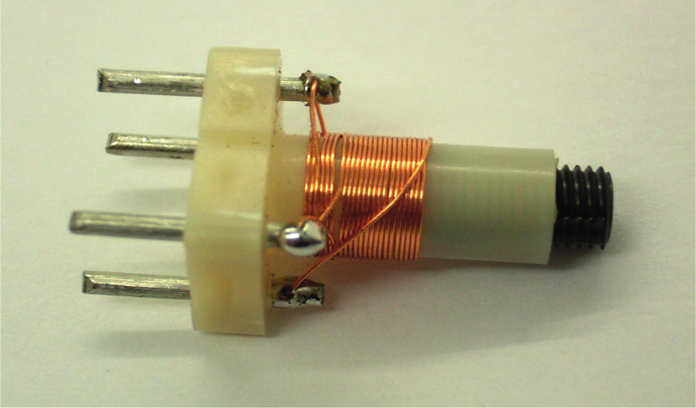
Radio Builder's Book
Figure 3.22: The receiver circuit diagram.
When building an Audion, it’s best to use a high value of grid resistance to keep the grid
current low, the resonant circuit will then be lightly loaded and loosely coupled to the an-
tenna. Usually, a grid resistance value of 1 MΩ will be used when working with high anode
voltages and 100 kΩ when working with lower operating voltages. Through experimenta-
tion, a resistance of 270 kΩ was found to be optimal for use with the ECC88, which has a
relatively high characteristic slope even at low anode voltages and currents. The anode re-
sistance of the cascade stage can also be designed to be quite high at 27 kΩ, which results
in a good level of amplification. The feedback setting is approximately mid position of the
potentiometer (P2 on the RT100), which provides the first triode with an effective anode
voltage of 6 V and an anode current of approximately 0.1 mA. These settings allow for loose
antenna coupling and give a high open circuit Q for the input circuit.
The antenna coil is wound on a 5 mm diameter coil former with a screw core and has a
total of 20 turns of 0.2 mm diameter copper wire. The antenna tap is located at two turns,
and the feedback tap is located at a total of seven turns. With these coil parameters, the
receiver covers the range from 5 to 12 MHz approximately and the screw ferrite core allows
for tuning adjustments. The coil former connection pins have been replaced with longer
versions that fit into a plug board.
Figure 3.23: The antenna coil.
The two-stage audio amplifier uses a small ferrite output transformer with a winding ratio
of 10:1. If the connected headphones have an impedance of 64 Ω with both drivers wired
in series, the external resistance for the final amplifier tube is 6.4 kΩ. The total amplification provided by this amplifier is so high that you need to introduce a volume control (P1).
● 46
Radio Builders Book - UK.indd 46
29-06-2023 16:09
Chapter 3 • Tube Regenerative Receivers
Figure 3.24: The finished receiver.
The receiver was operated using a 10-meter long wire antenna. All radio stations in the 49,
41, and 31-meter bands are received loud and clear. The sound tone is very pleasant and
clear. Reception is enjoyable, especially because of the more than ample volume. The loud-
er stations must be turned down quite significantly. In the 40-meter amateur radio band,
CW and SSB stations can also be received with feedback engaged. Instead of headphones,
a PC active speaker set can also be used for listening via a loudspeaker.
The sensitivity of the Audion is in no way inferior to a superheterodyne receiver, and the
sound is sometimes even better. To test the sensitivity, you can listen with feedback en-
gaged once with and once without an antenna connected. Without an antenna, only a low
level of noise is audible, but with an antenna connected, significant noise and crackling can be heard. The inherent noise floor is thus clearly lower than the antenna noise level. More
sensitivity will not bring any benefit in the signal to noise ratio. The concept of the particularly low-noise cascode Audion also proves its worth here.
Another possible source of interference is mains hum, which can be picked up by the
high-impedance input stage if the circuit layout is badly implemented. The RT100, howev-
er, has a continuous ground plane under the patch panel, which functions as an effective
shield. For the same reason, the receiver also shows hardly any sensitivity to hand move-
ments close to the set, which would otherwise cause frequency shifts.
Once a circuit has been developed on the RT100, it can easily be replicated and then built
more conventionally, for example, on an aluminum chassis. However, the plug board layout
has distinct advantages if you want to try out small changes. For example, you could use
a band spread for the 49-meter band or for the narrow 40-meter band between 7.0 and
7.1 MHz. Trying out various value parallel and series capacitors available in the bottom of
your junk box is faster than calculating and planning. Figure 3.25 shows a variant for the 40 meter band.
● 47
Radio Builders Book - UK.indd 47
29-06-2023 16:09
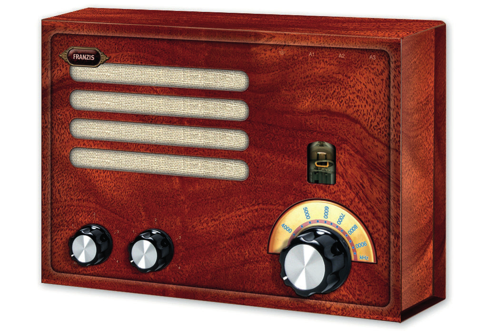
Radio Builder's Book
Figure 3.25: Bandspread control for the 40 m band.
3.9 The 6J1 Tube Radio
This radio kit from Franzis Verlag uses the 6J1 tube which is a far-eastern clone of the EF95
tube. This nostalgic shortwave radio is a genuine tube radio, just like the ones built in the pioneering days of radio technology. An RF tube in the receiving section ensures excellent
reception performance, while a modern amplifier IC provides all the necessary room filling
volume. The radio operates from a 15 V anode voltage.
Figure 3.26: The Franzis tube radio.
In this design, the tube performs three tasks: amplification, resonant circuit tuning and
RF signal demodulation. The 6J1 pentode is operated in triode mode with a connection
between the screen grid and anode. The grid resistor R1 is connected to the anode, which
increases the grid bias. This gives a sufficiently large anode current at low anode voltage.
With the cathode connected to the center tap of the resonance circuit, amplified RF energy
is fed back into the circuit. The tube operates in a Hartley oscillator configuration, which amplifies an incoming signal. At the same time, the grid diode rectifies the RF signal to
perform demodulation.
● 48
Radio Builders Book - UK.indd 48
29-06-2023 16:09

Chapter 3 • Tube Regenerative Receivers
Figure 3.27: The 6J1 Audion radio with output amplifier IC.
By adjusting the anode voltage with the feedback controller P1, the level of amplification
can be chosen so that the oscillator is just on the verge of oscillating. At this working point, the tube compensates for all losses that occur in the resonance circuit. The Q factor can be increased from about 50 to over 1000. At a reception frequency of 6 MHz, the bandwidth
is about 6 kHz, which means that closely spaced transmitters can be effectively separated.
The tuning peak also simultaneously leads to an increase in signal amplitude. Therefore, RF
signals of several hundred millivolts can occur at the control grid of the tube. The AM sig-
nals are demodulated at the grid diode by an increase in grid current with greater RF signal amplitude and a decrease in grid voltage. The demodulated AF signal appears at the same
time at the grid and modulates the anode current. The AF signal therefore appears at the
anode resistor R2. T2 acts as an AF preamplifier for the integrated amplifier IC1.
The radio uses two battery packs: four AA batteries supply a total of 6 V for the tube heater and the AF amplifier. The second is a 9 V battery connected in series with the heater battery so together they can supply an anode voltage of up to 15 V. The volume control has
a power switch which only has one contact. This disconnects the heater battery and turns
off T1 to disconnect the anode battery. The anode, screen grid, and control grid remain at
9 V when the device is switched off but the tube cathode will be cold so no current flows in this state. When the power is switched on, T1 conducts and connects the lower end of P2
to ground. The operating current of the anode battery is less than 1 mA, so this will usually last longer than the heater battery.
Figure 3.28: The coil and IC amp mounted on the PCB.
● 49
Radio Builders Book - UK.indd 49
29-06-2023 16:09

Radio Builder's Book
The entire circuit fits onto a very compact PCB. All wired components and the coil are locat-ed on the assembly side. The tube socket is installed on the reverse side.
Figure 3.29: The tube socket mounted on the reverse side.
Figure 3.30: The PCB wiring plan.
● 50
Radio Builders Book - UK.indd 50
29-06-2023 16:09

Chapter 3 • Tube Regenerative Receivers
Figure 3.31: All the wiring in the radio set.
In the final configuration, the circuit board is held in place by the wires to the tuning capacitor which is mounted on the front face. The tube lines up behind an opening in the case so
that users can benefit from the warm glow of nostalgia.
3.10 A Tube Regen for the 80 m Band
The specification for an amateur radio receiver in terms of frequency stability and sensitivity are quite high. The goal here is to design an amateur receiver built with vacuum tube
devices which meets the spec. A design for a crystal controlled transmitter using an EL95
tube can be found in Section 5.7. This receiver design should complete the rig.
Figure 3.32: A tube-based shortwave rig.
● 51
Radio Builders Book - UK.indd 51
29-06-2023 16:09
Radio Builder's Book
.
For use in amateur radio, the Franzis tube radio has been tweaked for use as an 80-meter
amateur radio receiver. The crucial change relates to the oscillator circuit. Bandwidth tuning is important so that the receiver can be precisely tuned. With five parallel 56 pF capacitors and the 20 pF FM tuning capacitor, a band from 3500 kHz to 3620 kHz has been achieved.
This includes the entire CW band and the beginning of the SSB band. With a long antenna,
the receiver is sufficiently sensitive, and the frequency stability is also good. In this regard, the tube radio is significantly superior to its transistor radio equivalent.
Figure 3.33: The tweaked receiver.
When I first started experimenting with the tube receiver together with the tube transmit-
ter to build a ham radio rig, it proved really tricky to switch between send and receive. I
had to flip the send switch, turn back the feedback regulator on the receiver, and adjust the volume to a level where I could just hear a slight tone. Then, after making the CQ call, I
needed to quickly readjust everything to optimal settings, so I wouldn’t miss any reply. To
improve usability I decided to add an automatic mute function to the receiver. Now when I
switch to send, the transmitter applies a DC voltage to the antenna input, which turns on
two transistors. One acts as an audio gain control and switches a small resistor in parallel with the volume pot. The other connects a resistor to the feedback potentiometer’s wiper.
This reduces the feedback below the oscillation threshold but does not completely turn it
off. This mute function is slightly delayed by a parallel base capacitor. With this mod you
can hear the crystal oscillator’s whistle for a very brief moment after switching. This is
quite useful because it allows you to estimate if you’re still on the same frequency when
transmitting and receiving.
On top of this I soldered two capacitors across the volume potentiometer to filter out some
RF interference that was being picked up when I touched the volume control knob while
Morse keying. This has now been eliminated thanks to this low-pass filter. The sound qual-
ity during reception is also slightly improved. However, a faint hum is still audible. This can be traced back to ripple on the transmitter anode supply. Since the feedback still has some
effect and there is still some amplification, the Audion now operates as an AM receiver to
demodulate the transmitter’s 100 Hz residual hum.
● 52
Radio Builders Book - UK.indd 52
29-06-2023 16:09
Chapter 4 • The Transistor Audion
Chapter 4 • The Transistor Audion
Compared to a vacuum tube Audion, a transistor version can be built smaller and with
less effort. Its receive sensitivity will not necessarily be any worse than its vacuum tube
equivalent. In the age of semiconductors the vintage Audion design is still relevant and its simple construction makes it an ideal practical introduction to radio frequency technology.
4.1 A One Transistor Radio
The circuit in Figure 4.1 shows a receiver without feedback, consisting of just one transistor and one 1.5 V battery. A low-impedance set of headphones can be used, preferably with
the left and right drivers connected in series, resulting in a working resistance of 64 Ω. The headphone jack also serves as the on/off switch, as the power supply is disconnected when
the headphone is unplugged.
In this circuit, the transistor performs both demodulation and signal amplification. The sensitivity of this receiver is so good you only need a 2 m length of wire as an antenna. The
tap on the coil should be at about 1/5 of the total number of turns of the resonant circuit
coil. The circuit is suitable for all AM bands from long wave to shortwave. A shortwave coil can be made of 25 turns with four taps, as described in the detector receiver in Section 2.3.
Figure 4.1: A 1-transistor receiver without feedback
This transistor receiver works in similar way to the vacuum tube design. Once again, the RF
signal at the input shifts the operating point to recover the modulation signal. In this case, the base-emitter diode also shifts the average input voltage lower when a high amplitude
signal is received. The time constant of the base circuit is so large that audio frequency
signals at the base are shorted to ground. The collector current increases with the instan-
taneous value of the signal amplitude.
The most important difference compared to the vacuum tube radio is that the transistor
circuit operates at much lower impedance levels. The input resistance is about 5 kΩ and
depends on the collector current and the current amplification factor. The input must there-
fore be connected to a tap on the receiver coil that will not damp the resonant circuit too
much.
● 53
Radio Builders Book - UK.indd 53
29-06-2023 16:09
Radio Builder's Book
4.2 A Shortwave PC Radio
The majority of radio receiver dongles or hardware for PCs, which pick up over-the-air radio broadcasts, are designed to cover the FM band. There is no reason however why you can’t
build one which covers the medium or shortwave bands.
The untuned receiver shown in Figure 4.2 is designed for direct connection to the micro-
phone input of a PC’s sound card. A supply voltage of 2.5 V is provided by the PC at the
sound input to power the usual electret type microphones that plug into the sound card, a
resistor of 2 to 3 kΩ provides a DC path to this supply. This means you already have the
supply voltage and a collector load resistor to build a simple transistor receiver.
Figure 4.2: An untuned PC radio.
In operation the diode at the base-emitter transistor junction demodulates the incoming
RF signal. The supply voltage via the resistor forward biases the junction so that it only
takes RF signals of just a few millivolts to produce a demodulated baseband signal at the
collector. The circuit is therefore much more sensitive than a simple diode detector design.
To hear the radio output on the PC speakers, you will of course need to turn the microphone
input on. The corresponding control provides volume adjustment. Among the advanced
settings of the microphone input, there is an additional switchable preamplifier that should also be turned on. The radio never needs to be disconnected from the sound card since it
can be turned off by clicking on the "mute" tickbox.
This receiver design hasn’t got any variable capacitor tuning and its reception is therefore extremely broadband. All strong stations from the 49 to the 19-meter band are received simultaneously. The coil has an inductance of approximately 2 µH and consists of 15 turns in
two layers using a pencil as a former. The resonant circuit capacitance of about 100 pF con-
sists of the transistor’s base-emitter capacitance together with the antenna capacitance,
resulting in a resonant frequency of approximately 11 MHz. The low input impedance of the
transistor dampens the resonant circuit to such an extent that a Q factor of one is obtained, meaning that the bandwidth is also approximately 11 MHz. The reception frequency ranges
between 6 and 17 MHz.
Without any of the usual frequency selection control you can get some really surprising
results. The special propagation conditions of shortwave radio signals cause one station or
another to stand out stronger at different times of the day. You will be able to hear news
broadcasts simultaneously in multiple languages, music from classical to pop, or folk songs
● 54
Radio Builders Book - UK.indd 54
29-06-2023 16:09
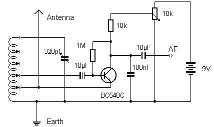
Chapter 4 • The Transistor Audion
from distant countries. Without any tuning, you can just sit back and listen in to the entire shortwave band.
To restrict the number of stations received simultaneously you can introduce a tuned reso-
nant circuit to the radio design. In order to achieve a high Q factor the transistor must be coupled via a low tap on the coil. The coil data and antenna coupling are the same as in the single-transistor radio from the previous section.
Figure 4.3: The PC Audion with variable capacitor tuning.
4.3 Regenerative Receiver
The simple transistor receivers described so far do not yet match up to the reception per-
formance of a good tube radio. A transistor radio without feedback already has relatively
good sensitivity and can work with a short whip antenna. The sensitivity can be increased
significantly by using RF feedback. This involves feeding back a portion of the amplified RF
signal to the resonant circuit. This compensates for losses and increases the RF amplitude
while also significantly improving selectivity. It is important to feed back just the right
amount of energy, as feeding back too much can cause self-oscillations that result in a
whistling sound. The level of feedback needs to be adjustable.
The circuit diagram in Figure 4.4 bears a strong resemblance to the corresponding tube
radio circuit from Section 3.3. The feedback is also taken from a lower tap on the resonant
circuit, but the transistor coupling has lower impedance. Either headphones or an audio
amplifier can be directly connected to the output.
Figure 4.4: An Audion with feedback.
● 55
Radio Builders Book - UK.indd 55
29-06-2023 16:09
Radio Builder's Book
The receiver circuit achieves good sensitivity and volume but adjusting the feedback can be
very tricky. The feedback loop is quite harsh and prone to oscillation. Additionally, strong signals can cause distortion, requiring the feedback to be pegged back. This results in a
relatively good reception of strong signals, but it’s difficult to find the optimal feedback setting. During modulation peaks, the transistor enters a region of higher gain slope characteristic, causing self-oscillation. This results in oscillations that periodically start and stop the feedback loop. The oscillation frequency is much lower than the modulation frequency
and sounds like an unpleasant rattling noise. While you can adjust the feedback control to
reduce this and obtain clear reception, the unpredictable behavior at the feedback thresh-
old doesn’t make for easy listening.
A softer feedback reaction requires self-regulation of the feedback, as in a well-designed
tube radio. In the initial approach, you can try reducing the base resistor and capacitor. The shorter time constant allows for a fast enough self-regulation through the base current. The circuit now closely resembles active regeneration according to Section 2.8, except that the
same transistor is now also used for signal demodulation.
Figure 4.5: Feedback using a smaller time constant at the base circuit.
The circuit now exhibits a smoother feedback operation. Continuous oscillations (motor
boating) can still occur but only when the control is turned up very high. Now the self-os-
cillation frequencies are higher at around 20 kHz. A loud noise can be heard and the circuit can be used in the upper shortwave band as a sensitive super regenerative receiver.
The smaller base capacitor of 100 pF improves the feedback operation but leads to lower
volume. The AF gain drops to a minimum because the coupling at the base attenuates
lower frequencies.
As with the vacuum tube Audion (see Section 3.1), two opposing processes are at work
here. A high RF signal causes an increase in the collector current (anode demodulation)
because of the transistor gain slope characteristic. At the same time, however, the base
current negatively charges the base capacitor, thus reducing the collector current (grid
demodulation). Both affects partially cancel each other out and lead to a low AF output
voltage.
● 56
Radio Builders Book - UK.indd 56
29-06-2023 16:09

Chapter 4 • The Transistor Audion
It has therefore been shown that optimizing the component values of an Audion stage built
with a transistor poses greater difficulties than one with a vacuum tube. One solution is to divide the tasks. Separate transistors can be used for the feedback and the demodulator
stages. The feedback stage is given a small time constant in the interest of a smooth feed-
back control. The Audion stage, on the other hand, uses a large base capacitor that shorts
the base to ground even for AF signals.
Figure 4.6: An Audion using separated feedback stages.
This circuit actually delivers reception results that come close to a good tube radio. Good
sensitivity and volume, a smooth feedback loop, and good sound even when receiving
stronger stations provide the basis for a powerful shortwave receiver.
4.4 Separated Feedback Paths
It has proven to be effective to use a separate amplifier for tuning the oscillator circuit and to separate it from the Audion stage. The circuit in Figure 4.7 shows a differential amplifier with two PNP transistors in an oscillator circuit. The amplification can be adjusted within
wide limits by controlling the emitter current with the potentiometer. One advantage of the
circuit is that the oscillator coil requires just a single tap. It should be placed at approximately one third of the total number of coil turns to avoid influencing the circuit too much.
Figure 4.7: Audion with separate regeneration circuit.
The differential amplifier stage has good linearity because the nonlinear gain characteristics of both transistors largely cancel each other out. That’s why, in this circuit, there is no shift in the operating point with increasing input amplitude. Capacitor coupling is not required,
resulting in a regeneration circuit that operates with a largely flat frequency response.
● 57
Radio Builders Book - UK.indd 57
29-06-2023 16:09
Radio Builder's Book
Figure 4.8: The transistor Audion circuit board.
In the Novemer 2000 issue of Elektor Magazine, a circuit for a shortwave Audion radio was described along with a PCB designed for the circuit. A TDA7052 audio amplifier IC takes
care of the AF stage and the circuit employs an NPN transistor in an Audion detector con-
figuration, using with two PNP transistors in a separate regeneration circuit. The voltage
at the feedback potentiometer is stabilized by a forward biased LED. The coil has multi-
ple taps, allowing for adjustment of the coupling between the antenna of the audio input
and the regeneration circuit. Typically, the device covers a frequency range of about 5 to
12 MHz. An additional 300 pF capacitor switches the receive frequency to the 80-meter
amateur radio band (3.5 to 3.8 MHz), where you can pick up SSB and CW transmissions.
● 58
Radio Builders Book - UK.indd 58
29-06-2023 16:09


Chapter 4 • The Transistor Audion
Figure 4.9: The receiver circuit diagram.
The two PNP transistors in a diff erential amplifi er confi guration practically work as an oscillator. Therefore, you can add the missing carrier for SSB and CW signal reception. For AM
reception, however, you set the current so that all losses are just compensated for and no
oscillations occur. With optimal regeneration, the circuit provides very good amplifi cation and selectivity. The circuit does not suff er from large signal and intermodulation products that aff ect many other types of receiver design because only the desired signal is amplifi ed by regeneration. In practice, this simple circuit can outperform some lower-priced PLL world band receivers in terms of sound and sensitivity.
T1 and T2 form a diff erential amplifi er, with the input (base of T2) and output (collector of T1) both connect to the coil. This confi guration acts like a negative diff erential resistance and adds the regeneration signal to the resonant circuit. The circuit can be connected to the hot end or to a tap point on the coil. For coils with high damping, the lowest tap may have
too small an impedance, so that no oscillations can occur. The resonant circuit is theoret-
ically best when the loss resistance is exactly compensated for by the negative resistance
generator circuit. The gain is set by the emitter current. The antenna also dampens the
circuit; a long antenna should be connected to a lower tap point.
The coil has four times fi ve turns, i.e., 20 turns with three tap points. A separate antenna coupling coil is not needed since the resonant circuit coil has multiple taps. Try each tap
point for the most favorable match.
● 59
Radio Builders Book - UK.indd 59
29-06-2023 16:09

Radio Builder's Book
A 50 cm to 3 m length of wire is all you need for the antenna. You can easily listen to all
the strong stations in the 49 m and 41 m bands. With feedback engaged, you can hear CW
signals in the 40 m amateur radio band. The 80 m band can also be monitored with the
jumper JP1 in place.
4.5 Regeneration using an Emitter Follower
Using an emitter-follower configuration has often proven to be effective. This circuit oper-
ates similar to a diode circuit with biasing, where the input resistance is increased by the current amplification of the transistor. While you can expect a lower voltage gain here, it
can be easily compensated for by subsequent stages.
Figure 4.10: MW Audion in collector circuit.
One advantage of this circuit is the use of a simple coil without any tap points. This is possible because the collector circuit has a high input resistance. Regeneration is also achieved without tapping the coil. The RF voltage is coupled into the resonant circuit via a capacitive voltage divider provided by the transistor base-emitter capacitance Cbe and the emitter
capacitor. Amplification is adjusted by controlling the collector voltage. This results in an easily adjustable regeneration control with soft oscillation onset. This circuit is suitable for a wide frequency range from about 50 kHz to 4 MHz i.e., from the longwave band to the
lower shortwave band. By switching coils, multiple bands can also be covered.
The circuit can also be used without any regeneration regulation by using a lower operating
voltage. Figure 4.11 shows a four-stage medium wave radio with a speaker that operates with only 1.5 V. With a current consumption of only 10 mA the life for an alkaline AA battery is approximately 200 hours. The radio works well with the internal ferrite antenna but
adding a wire of about 2 meters as an additional antenna allows for the reception of more
stations.
Figure 4.11: The mediumwave radio receiver with loudspeaker.
● 60
Radio Builders Book - UK.indd 60
29-06-2023 16:09
Chapter 4 • The Transistor Audion
The four-stage circuit has a significant overall gain, which means there is a potential risk of instability due to unwanted feedback of audio or RF signals. To prevent this, the Audion
stage has its own supply smoothing capacitor, which prevents signals from it coupling to
the power supply. The following audio stages operate with reduced cutoff frequency to pre-
vent self-oscillation due to parasitic capacitances.
4.6 A Medium Wave Receiver using the TA7642
The integrated medium-wave receiver module ZN414 from Ferranti was later replaced by
the MK484 and is now available as the TA7642. This 3-pin integrated module is packaged
in a TO92 outline, designed to operate from a 1.5 V supply. Figure 4.12 shows a basic circuit where it is used to build a simple medium-wave receiver with a ferrite rod and variable capacitor for station tuning. The receiver has good sensitivity and selectivity and is comparable in reception performance to simple superheterodyne receivers. In the evening,
reception across Europe is possible.
Figure 4.12: A medium wave receiver using a ferrite rod antenna.
This circuit has a large overall gain and stimulates the resonant circuit depending on the
supply voltage through a negative input resistance. Circuit stability is not guaranteed with a supply voltage higher than 1.5 V. If there are self-oscillations with a high- Q resonant circuit, a 200 kΩ to 1 MΩ resistor can be connected in parallel to the coil to ensure stability.
The circuit contains a simple gain control so that weak and strong stations are received
with almost the same volume. Large RF input signals increase the current consumption and
voltage drop across the working resistor. This reduces the supply voltage at pin 3 which
decreases the gain.
Figure 4.13 shows the internal circuitry of the TA7642. You can see an emitter follower
with T1 as a high-impedance input stage. T4, T5, T7, and T9 form four RF amplifier stages.
T10 is the actual demodulator. All other transistors form auxiliary circuits to stabilize the operating points. The collector of the output stage T10 is also connected to the operating
voltage of all preceding stages and reduces the gain at high RF input voltages. Only very
small values of capacitor can be fabricated in integrated circuits so this receiver only works with high gain from around 500 kHz. The upper cut-off frequency is determined by the
high-impedance design and the junction capacitances. The IC can be used but with certain
limitations in the longwave and in the lower shortwave bands.
● 61
Radio Builders Book - UK.indd 61
29-06-2023 16:09


Radio Builder's Book
Figure 4.13: The TA7642 Block diagram.
The receiver chip is well-suited to build a medium-wave PC radio, which, like the shortwave
radio described in Section 4.2, is powered through the sound card’s microphone input. The
higher operating voltage of 2.5 V necessitates the use of an additional series resistor of
10 kΩ for stability purposes. The resistor should be bridged with an electrolytic capacitor to allow the full audio signal to be applied to the microphone input.
Figure 4.14: Powered from the PC's sound card.
The TA7642 is currently not stocked by many suppliers so it would be useful if you try to
replicate its function using discrete components. A block diagram of the chip shows its
working principle so it’s not so difficult to reduce the circuit to its essential components.
Figure 4.15 shows an almost equivalent replacement circuit using only three BC548C NPN
transistors. This substitute consists of one emitter follower input stage, only one RF stage, and the demodulator stage.
Figure 4.15: A replica of the TA7642 built using discrete components.
● 62
Radio Builders Book - UK.indd 62
29-06-2023 16:09
Chapter 4 • The Transistor Audion
The replica circuit shows very similar characteristics to the original but tends to be more
prone to bursting into oscillation due to the larger emitter current in the input stage. This means that the regeneration effect is stronger. In principle, this is the same oscillator circuit as the emitter follower used in Section 4.5. If you use a coil with low self-damping, it may be necessary to use a resistor of value 200 kΩ to 1 MΩ in parallel with the resonant
circuit, which partially compensates for the negative input resistance. Another advantage
of this substitute circuit is that the larger coupling capacitor also allows operation in the long-wave band.
4.7 A Retro Medium Wave Radio
The design of Franzis-Radio (which uses a TA7642) is reminiscent of valve radio sets that
were popular in the 1950s. In 2008 this kit originally included a signal strength analogue
meter but later versions were housed in a smaller case without the meter. More recently,
broadcasters have turned to more contemporary methods of sending out program material
and in a lot of countries many medium wave stations are now silent. The kit is no longer
available but the concept is still relevant; you can still listen to many interesting stations from all over Europe, especially during the evenings.
Figure 4.16: The medium wave Franzis set oozes nostalgia.
The resonant circuit which serves as the receiving antenna consists of a ferrite-core coil
and variable capacitor. The RF signal is taken out at a tap point on the coil and fed to the input of the receiver IC (Pin 1). At the output (Pin 3), both the demodulated audio signal
and a control voltage for automatic gain control are present. This voltage drops from 1.2 V
without a signal to below 1 V with a strong signal. The control voltage is fed back to the
input via R4 and adjusts the receiver’s amplification. This feedback ensures that strong and weak stations appear to sound almost equally loud.
● 63
Radio Builders Book - UK.indd 63
29-06-2023 16:09
Radio Builder's Book
Figure 4.17: Schematic of the medium wave radio.
A regulated voltage between approximately 1 and 1.2 V is supplied via the volume control
to the base of the amplifier transistor T1. The operating point at around 20 mA is thus
largely independent of the battery voltage and variations in the transistor’s current gain,
but sensitive to changes in the received signal strength. The display pointer shows the
emitter voltage and thus also the emitter current of T1. The current is reduced by about
5 mA when the volume control is turned down because an additional base resistor of up to
10 kΩ reduces the base current. The gauge indicator pointer shows all changes in the emit-
ter current and thus also the state of the battery, the set volume, and the signal strength
of the selected station.
The circuit is particularly efficient and requires only a single 1.5 V battery. A typical alkaline battery with a capacity of 2000 mAh will power it for 100 hours at high volume. Turning
down the volume will extend battery life.
The pointer deflection decreases when a station is received, which helps with more precise
tuning. In old tube radios this function was often realized with a "magic eye" vacuum tube.
The ferrite rod antenna is quite directional; the received signal strength will be at a maximum when the ferrite rod axis is perpendicular to the signal source. This directional prop-
erty is useful if you need to suppress a strong signal from a transmitter interfering with
another station you want to listen to. Just rotate the radio so that the interfering signal
drops to a minimum. At this point you know the ferrite rod axis is directed at the location
of the interfering signal transmitter.
● 64
Radio Builders Book - UK.indd 64
29-06-2023 16:09
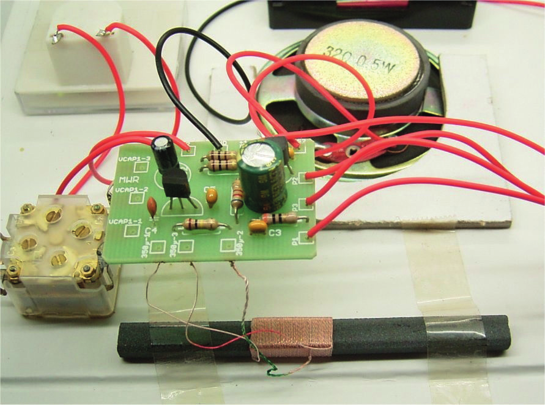
Chapter 4 • The Transistor Audion
Figure 4.18: The populated PCB.
The small PCB is easy to assemble. In addition to the receiver IC, there is a transistor which works as a power amplifier. When fully assembled, the PCB is quite light and can be held in
place just by the wires soldered to the tuning capacitor which is mounted to the front panel.
Figure 4.19: It all fits in the case.
4.8 Shortwave Regen using an Emitter Follower
A shortwave radio using just two transistors and powered by a 1.5 V battery is a great way
to get started with shortwave reception technology. You can connect the receiver to a set
of active PC speakers to provide impressive reception performance.
The circuit has a unique feature. The BC558C PNP transistor works as an Audion in a col-
lector circuit (emitter follower, see Section 4.5). Only a very low emitter current is required to achieve oscillation. Using the potentiometer, for AM reception you can adjust the Audion
feedback level to the point just before oscillation starts and for CW and SSB reception, just after oscillation has begun.
● 65
Radio Builders Book - UK.indd 65
29-06-2023 16:09
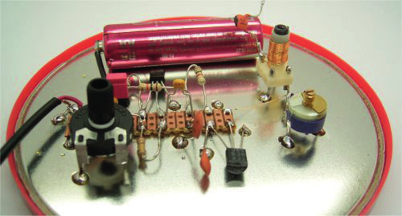
Radio Builder's Book
Figure 4.20: The 2-transistor Audion receiver.
The entire circuit was soldered onto the cut-out lid of a coffee can. A 100 pF trimmer is used as the tuning capacitor but you can also change station by adjusting the core in the coil former. Even though you will need to use a screwdriver to select a station, it’s easy to tune in.
Figure 4.21: Experimental construction.
The Audion features smooth feedback behavior and is relatively easy to use. The receiver
frequency range covers from the 49-meter band to the 31-meter band. You can also listen
to amateur radio in CW and SSB between 7.0 and 7.1 MHz. A wire antenna with a minimum
length of 3 meters works well with this design.
● 66
Radio Builders Book - UK.indd 66
29-06-2023 16:09
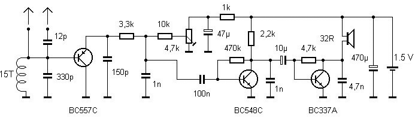
Chapter 4 • The Transistor Audion
Figure 4.22: Expanding the design using 4 transistors.
This emitter-follower Audion design was adapted without any tuning and for loudspeaker
operation. The idea is that anyone should be able to build it without the need for any special RF components; it doesn’t even use a tuning capacitor or shortwave coil. All that’s required is a handful of standard components, a speaker, an old tin lid and a 1.5 V battery.
Figure 4.23: Loudspeaker operation.
Without a trimming capacitor, how can the receiver be tuned? The Audion uses a number
of fixed value capacitors soldered together wired in parallel with the home-brew variometer
coil that achieves fine-tuning by squashing or stretching the coil turns. To make this coil 17
turns of wire are tightly wound around an AA battery. When the coil is removed from the
battery it expands slightly leaving 15 turns with a diameter of 17 mm.
In use its necessary to find the desired frequency and antenna coupling, then you can turn
up the potentiometer near the feedback loop, until you hear an increase in noise which indi-
cates an increased sensitivity. The coil can now be carefully squashed or stretched until the desired station is clearly audible. In the first attempt, I managed to pick up a strong station in the 49-meter band. Many other stations will also be available at dusk. To simplify tuning, the radio was equipped with a lever mechanism at the end to adjust the coil length. With a
little skill, the frequency can be set as precisely as with a tuning capacitor.
● 67
Radio Builders Book - UK.indd 67
29-06-2023 16:09

Radio Builder's Book
Figure 4.24: Tuning using a DIY variometer coil adjuster.
4.9 A Shortwave Retro Radio
The Franzis shortwave radio is a transistor Audion for the range of 3.5 to 9.5 MHz. The
emitter-follower circuit was also used here, but in addition, an audio amplifier using the
LM386 was added.
Figure 4.25: The Shortwave Transistor Audion radio.
Transistor T1 operates as an emitter follower in an Audion configuration performing three
tasks: amplification, adding regenerative feedback to the resonant circuit and demodulat-
ing the RF signal. C2 and the internal base-emitter capacitance of about 5 pF form a capac-
itive voltage divider. Together with the resonant circuit, a Colpitts oscillator is formed. By adjusting the emitter current appropriately, the gain can be chosen such that the oscillator is just about to start oscillating. At this operating point, the transistor compensates for all losses incurred in the resonant circuit. The quality factor Q can be increased from about
● 68
Radio Builders Book - UK.indd 68
29-06-2023 16:09
Chapter 4 • The Transistor Audion
50 to over 1000. Correctly adjusted this can provide the radio with a receive bandwidth of
about 6 kHz on a 6 MHz radio signal to give good separation of adjacent broadcast stations.
The regenerative feedback leads to an increase in the received signal amplitude. RF sig-
nals up to about 100 mV can therefore occur at the transistor base. The AM signals are
demodulated by the non-linear transistor characteristics. The AF signal then appears at the
emitter. R1 and C2 form a low-pass filter that removes any RF signal remnants. T2 forms
an AF preamplifier for the integrated amplifier IC1. The AF stage also uses a PNP transistor to avoid any possible mix up during construction.
Figure 4.26: Transistor Audion with an IC output amp.
One special feature of this Audion circuit is the direct coupling of the transistor to the
oscillator circuit. T1 operates with a collector-emitter voltage of only about 0.6 V. The
base-emitter junction has a capacitance of about 5 pF which strongly affects the oscillating circuit. The close coupling ensures that the transistor also acts like a capacitance diode or varicap, allowing fine-tuning of the frequency via feedback control. The regeneration and
onset of oscillation is quite soft so the frequency can be pulled by several kilohertz, which is advantageous for receiving SSB and CW stations.
The LM386 speaker amplifier operates directly from a 9 V battery. Power consumption
depends heavily on the volume setting. At low volume, the entire receiver only consumes
about 5 mA. The LED serves not only to show the receiver is on but also for voltage stabili-
zation as the LED has a constant 1.8 V forward voltage drop. As a result, the two transistor stages always receive a stable operating voltage.
● 69
Radio Builders Book - UK.indd 69
29-06-2023 16:09
Radio Builder's Book
Figure 4.27: The PCB and components mounted in the case.
When tuning the frequency, you will find several shortwave bands with multiple stations.
On shortwave, you can achieve a high range during the day, but many stations only broad-
cast in the evening. Below 4 MHz is the 75-meter band, which is often overlooked on many
shortwave receivers. On this band you can pick up a few interesting stations in the evening.
The 49-meter band at 6 MHz is densely occupied by numerous European stations. Some
frequencies are used consecutively by different stations.
The 41-meter band above 7 MHz is also very busy in the evening. This receiver also reach-
es parts of the 31-meter band above 9 MHz. Generally, you can achieve a better range at
higher frequencies. Often, you can also receive stations from outside Europe. Between the
broadcast bands, there are numerous stations in CW (Morse telegraphy), SSB (single-side-
band voice radio), RTTY (radio teletype), and weatherfax (weather picture radio). All of
these stations can only be heard with activated regeneration.
4.10 A 40-m Shortwave Audion with Regeneration
The Franzis shortwave radio featured in the previous section with its open construction is
well-suited for shortwave radio reception. It does, however, suffer from poor frequency sta-
bility when it comes to receiving CW and SSB signals on the amateur radio bands. It’s also
difficult to set the frequency accurately. The radio can be modified to make it more suitable as an amateur radio receiver specifically for the 40m band. The crucial improvement made
here is to add some shielding to the circuits on the PCB. This reduces its sensitivity to the proximity of the radio operator’s hands and helps reduce any tendency for unwanted circuit
oscillations.
● 70
Radio Builders Book - UK.indd 70
29-06-2023 16:09

Chapter 4 • The Transistor Audion
Figure 4.28: RF shielding plate.
The thin tinplate used for the shielding is salvaged from a food container of cappuccino
coffee powder. I’ve always kept such sheets and used them as a base for experimental
circuits. The material is very thin and can be cut with regular scissors. I first cut out a cardboard template to determine the shielding plate dimensions. The final shield was then cut,
bent, and soldered together.
Figure 4.29: Earthing the shield.
I swapped the connections to the variable capacitor so that now the VHF section is being
used. The ground tag of the AM side is soldered to the shield. A fairly thick ground wire also connects the variable capacitor ground terminal on the board to the metal shield, which
also sets the mounting depth. Overall, there are several ground connections to the metal
sheet. I also soldered some wire support struts to hold the free ends of the sheet and pre-
● 71
Radio Builders Book - UK.indd 71
29-06-2023 16:09

Radio Builder's Book
vent mechanical vibrations. All of these measures have been very successful and the radio
set is now totally unaffected by the radio operator’s hand movements.
Figure 4.30: Capacitors in the resonant circuit.
The band spread uses a 56 pF capacitor across the resonant circuit with another 56 pF
capacitor in series on one side of the 20 pF VHF variable capacitor and its parallel 10 pF
trimmer. The dimensions were not precisely calculated but by experimentation, using what-
ever materials were available at the time. As a result, the receiver now covers the entire
40-meter band and the start of the 41-meter broadcast band. The base of the Audion tran-
sistor is no longer at the hot end of the coil but at the center tap that was previously used as the antenna connection A1.
Some distortion is still audible when receiving CW and SSB stations due to changes in the
transistor’s junction capacitance. Depending on the signal, the operating point changes,
and so does the input capacitance. This results in additional frequency modulation and
unpleasant audio effects. To reduce this effect, I installed an additional 12 pF capacitor
between the base and emitter.
Figure 4.31: The modified schematic.
● 72
Radio Builders Book - UK.indd 72
29-06-2023 16:09
Chapter 4 • The Transistor Audion
With this modification, the influence of the transistor’s base capacitance is reduced. The
regeneration is also increased, allowing for larger feedback signals to be set. The transis-
tor then operates more like a direct mixer. When the regeneration signals are significantly
larger than the received signals, the operating point shifts less strongly. There is now a
larger range of regeneration regulation beyond the oscillation threshold, which can be used
to help fine-tune the frequency. This makes exact tuning of an SSB signal much easier.
Another improvement in the signal-to-noise ratio was achieved by reducing the audio band-
width. To do this, I just soldered a 22 nF capacitor across the volume control. In the end,
audio volume was a little lacking but the LM386 still has something in reserve. I placed a
10 µF capacitor in series with 470 Ω resistor between pins 1 and 8. The Audion receiver in
this form is suitable for amateur radio use. It’s fun to use it to listen to CW transmissions, and the Audion is also well suited as a practice receiver.
4.11 Shortwave Regen Optimization
Is it possible to optimize a transistor Audion so that it can be used for real radio operation on amateur radio bands, as was practiced in the early days of radio? The basic idea is that
if a stable and well-shielded oscillating circuit with the highest possible Q factor is loosely coupled, it should be possible to build a very stable and sensitive Audion regenerative
receiver. My test setup on a section of copper-clad board does not yet meet these require-
ments but it allows for any other oscillating circuits to be connected easily. At least the
continuous ground plane has a positive effect on circuit stability.
Figure 4.32: Prototype layout built on a copper-clad board.
Over the years, two Audion regen circuit designs have proven particularly effective so you
can take a closer look at them here. The first, simple version is used in the Franzis short-
wave radio. A single PNP transistor is responsible for regeneration and demodulation.
● 73
Radio Builders Book - UK.indd 73
29-06-2023 16:09
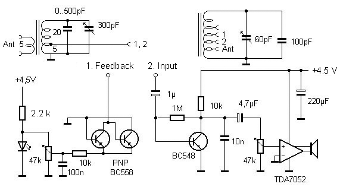
Radio Builder's Book
Figure 4.33: Audion regen in PNP-Emitter follower configuration.
While this circuit works very well with careful layout, it has some disadvantages in terms
of easy repeatability for those building it themselves. The transistor is tightly coupled to the circuit, so the feedback regulator affects the frequency. This can also be an advantage
if used skillfully for fine-tuning. Overall, the gain of the regeneration circuit is low, so the antenna must only be loosely coupled. Correct adjustment is therefore not easy. Another
disadvantage is that the Audion stage has no gain, so an AF amplifier stage with a high
level of gain is required.
The second proven circuit was also used in the Elektor shortwave Audion. Here, the ac-
tual Audion stage operates in emitter configuration which has high gain. Regeneration is
taken care of separately using two PNP transistors in a differential amplifier configuration.
Figure 4.34: Audion with separate regeneration.
I based my first build on this variant. The regeneration stage has so much gain that it practically brings any oscillation circuit to resonance. Therefore, the circuit is suitable for experiments with different oscillation circuits and also for band switching. Unlike the original, I operated everything from 9 V this time and used an LM386 amplifier in the final stage.
Additionally, there is a 5 V voltage regulator for the Audion.
● 74
Radio Builders Book - UK.indd 74
29-06-2023 16:09
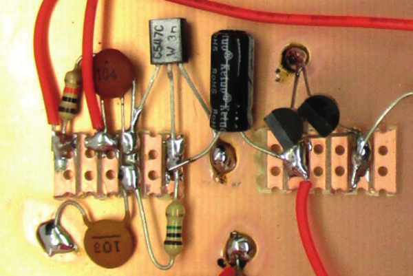
Chapter 4 • The Transistor Audion
Figure 4.35: Experimental air-spaced coil with coil tap points.
The free-standing coil was wound using one meter of insulated single-strand wire. Although
this construction method produces a coil which is mechanically quite loose it is stable
enough for our purposes and is easy to replicate at home without any special tools. The tap
points can be easily added using a hot soldering iron. The Audion stage is connected to the
fifth turn tap and the antenna at the first turn. Because a long wire antenna was used here, it has to be very loosely coupled. Alternatively, a large wire-loop antenna can also be used.
Figure 4.36: Audion stage with separate regeneration circuit.
The radio was built on an all copper clad board. The individual components are soldered
onto short sections of a strip board. Figure 4.36 shows the NPN Audion stage and the two
PNP transistors for the regeneration circuit. The continuous copper surface is useful to pro-mote operational stability and shield against electrical interference.
● 75
Radio Builders Book - UK.indd 75
29-06-2023 16:09

Radio Builder's Book
Figure 4.37: A Loop antenna provides the resonant circuit.
This regen can be used to add regeneration to different circuits. The circuit can be connect-ed to the low tap for loose coupling, or to the hot end of the circuit for greater signal voltage. When connecting a long outdoor antenna, tap points low down in the winding are used
for both the regeneration and the antenna connections. However, a small loop antenna can
be connected directly to the hot end. Both variants were tested with the two circuit halves.
The loop consists of a total of two meters of Litz wire, simply hung over a stool. This pro-
vides good reception indoors because the loop is sensitive to the magnetic field component
of the electromagnetic signal. Adding signal regeneration to the loop achieves the same
effect as using a much larger loop. A croc clip was used for simple hook up to test circuits.
Figure 4.38: Test setup with a loop antenna and loudspeaker.
The variable capacitor is a 4-gang version and two of the sections have not been used yet.
I wanted to test the stability of an iron powder toroidal core, so I wound some wire around
a T50-2 core and added a few tap points to the coil. I also included two ceramic capac-
itors, each with a capacitance of 56 pF, in parallel with one 20 pF section of the variable
capacitor. This 4 gang variable capacitor has 2 × 266 pF tunable sections for use with AM
bands and 2 × 20 pF tunable sections for the FM band. On my first attempt, I was able to
● 76
Radio Builders Book - UK.indd 76
29-06-2023 16:09

Chapter 4 • The Transistor Audion
pick up many radio stations very clearly on the 49-meter band. The total capacitance value
ranges between 112 and 132 pF. This gives a capacitance ratio of 1 to 1.18. The frequency
ratio is the square root of this, which is 1.085. This gives a tuning range of 500 kHz in the 49-meter band.
Figure 4.39: Toroidal-core coil for 40 m.
To be able to work on the 40-meter band, I carefully unwound some turns. This brought me
close to the beginning of the band at 7 MHz. The receiver now covers the 40-meter band
and part of the 41-meter band. The Audion needs to be connected to the tap at about half
the number of turns. Thanks to the band spread, SSB and CW stations can be easily tuned
with precision. The frequency stability is quite good, although there is still some sensitivity to hand movements due to the open construction of the circuit. It should be possible to
build a useful Audion using a toroidal core for amateur radio use inside a shielded enclosure.
Figure 4.40: Test setup using a JFET Audion.
● 77
Radio Builders Book - UK.indd 77
29-06-2023 16:09
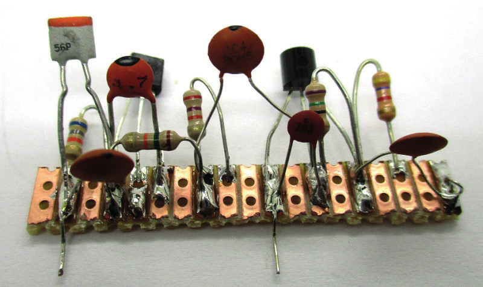
Radio Builder's Book
At the end of the series of experiments, I wanted to try using a JFET as well. Previous at-
tempts had not been very successful, and I attributed this to the fact that a JFET’s charac-
teristic curve exhibits greater linearity compared to a bipolar transistor. Direct comparisons have indeed shown that a JFET circuit delivers a lower audio signal. For this reason, an
additional audio stage was added.
Figure 4.41: The JFET Audion.
The JFET is operated with very little source current and only very small capacitance at the
input. Nevertheless, the amplification is sufficient for active regeneration.
Figure 4.42: Construction of the active stage.
The new Audion circuit was now built on a small section of perf board. The circuit is con-
nected to the desired resonance circuit and volume potentiometer with two crocodile clips.
This way makes it easier to switch back to the old bipolar circuit.
The comparison clearly shows that the FET Audion is the better circuit. The frequency
stability is significantly higher, and the almost complete lack of frequency dependence on
regeneration settings is convincing. For CW and SSB reception, regeneration can be more
strongly over driven without losing AF volume. This is where the more linear characteristic
curve of the FET is advantageous. Overall, the circuit has a very large dynamic range and
can process weak CW stations as well as strong broadcasting stations.
● 78
Radio Builders Book - UK.indd 78
29-06-2023 16:09
Chapter 4 • The Transistor Audion
All in all, there’s nothing like the good old Audion. Compared to a direct mixer, an Audion
is much simpler to build because it only needs a single resonant circuit. Additionally, the
essential amplification is achieved through the sharply tuned regeneration. The circuit has
a quality factor of up to 1000, which simultaneously provides good selection and reduces
the risk of intermodulation distortion or strong broadcast stations breaking through. On top of this, the Audion can also receive AM clearly, which is hardly possible with a direct mixer.
● 79
Radio Builders Book - UK.indd 79
29-06-2023 16:09
Radio Builder's Book
Chapter 5 • RF Oscillators
The quality of a receiver or a transmitter depends heavily on the type of oscillator circuit used. While free-running oscillators with tuning capacitors require a lot of effort to achieve good stability, a quartz crystal oscillator can provide ideal properties but at a fixed frequency. Good stability of a quartz oscillator and tuning capability can be achieved using a PLL
circuit. The current state-of-the-art oscillator technology is represented by DDS generators, which provide the accuracy of a quartz oscillator together with an adjustable frequency
output signal with very fine frequency resolution.
5.1 LC Oscillators
Common basic circuits for RF oscillators have already been described in connection with the
Audion, as every Audion with regeneration works like an oscillator. Many results with the
Audion also showed some potential weaknesses of the oscillator. Frequency instability can
be a result of external influences such as varying capacitive coupling from hand movements
close to the receiver, voltage fluctuations or interference signals. In the interest of high stability, all of these influences must be kept to a minimum. The following factors are crucial:
• A high Q resonant circuit
• Low temperature coefficients of the coil and capacitors
• Loose coupling to the oscillator circuit
• Oscillator shielding
• Decoupling and stabilization of the operating voltage
• Load decoupling using buffer stages
Figure 5.1 shows the basic circuit of a stable VFO (Variable Frequency Oscillator) with
oscillator stage and buffer amplifier. The first transistor is loosely coupled to the resonant circuit through a capacitive voltage divider. The optimal values for capacitors and resistors depend on the desired frequency range and should be determined by experimenta-
tion. A subsequent buffer stage should minimize feedback signal on the resonant circuit.
Figure 5.1: VFO using capacitive coupling.
● 80
Radio Builders Book - UK.indd 80
29-06-2023 16:09
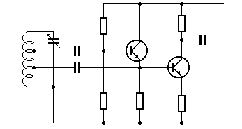
Chapter 5 • RF Oscillators
The long-term stability of a circuit also depends on the temperature behavior of the com-
ponents that determine the frequency. Styroflex (polystyrene) capacitors are well-suited
for this purpose because their temperature coefficient (TC) is close to zero. However, even
standard ferrite cores have a certain temperature coefficient. It takes a lot of careful consideration to compensate for temperature induced drift by using ceramic capacitors with
opposing TCs.
Figure 5.2 shows the popular Clapp oscillator circuit often used in amateur radio equip-
ment with component values suitable for use in the 40-meter amateur radio band and the
41-meter broadcasting band. In this form, the oscillator can be used for direct conversion
receivers to listen to CW and SSB signals, as well as for digital radio broadcasting (DRM).
Mechanical stability and good shielding are important factors to consider.
Figure 5.2: Clapp oscillator for the 40-m band.
The Clapp oscillator configuration uses capacitive coupling and has a wide operating fre-
quency range which makes it popular with amateur radio enthusiasts. If you need to cover
even larger frequency ranges, you can use a tap point coupling to the resonant circuit coil
as shown in Figure 5.3.
Figure 5.3: Stable VFO with a wide operating range.
5.2 Crystal Oscillators
The electrical characteristics of quartz crystal are equivalent to a resonant circuit with an extremely high value of Q or quality. Therefore, quartz oscillators with good stability can be easily built without the need for any inductors. Figure 5.4 shows the standard Pierce circuit used to build a crystal oscillator.
● 81
Radio Builders Book - UK.indd 81
29-06-2023 16:09

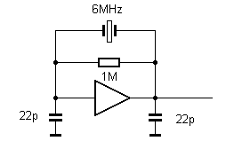
Radio Builder's Book
Figure 5.4: The Pierce Oscillator.
A transistor can be used in an oscillator collector circuit using a capacitor voltage divider network. This circuit is used, for example, in the integrated mixer and oscillator IC type
NE612. A capacitor trimmer allows for fine tuning and can adjust or 'pull’ the quartz fre-
quency by up to about 3 kHz.
Figure 5.5: Quartz crystal oscillator using common collector amplifier.
Another popular oscillator configuration uses a CMOS gate instead of a transistor. The cir-
cuit shown in Figure 5.6 is used in integrated oscillators in microcontrollers, as well as in CMOS circuits such as the oscillator and divider IC 4060 or the faster HC4060.
Figure 5.6: A crystal oscillator using a CMOS gate.
For frequencies below 1 MHz, a ceramic resonator is often used instead of a quartz crystal.
These components are less expensive than quartz crystals, but they don’t achieve the same
temperature stability and accuracy.
● 82
Radio Builders Book - UK.indd 82
29-06-2023 16:09

Chapter 5 • RF Oscillators
5.3 Amplitude Modulation
The small medium wave AM transmitter described here can be used to broadcast programs
to a nearby medium wave radio. The transmitting coil wound on a ferrite core sends signals
which couple directly to the ferrite rod in a radio receiver. The transmitter operating fre-
quency is derived from a 976 kHz ceramic resonator, which can be salvaged, for example,
from an old TV remote control unit. Some degree of fine frequency tuning is possible using
the 30 pF trimmer. A likely weak station in the background can be tuned to the beat fre-
quency null, for example, at 981 kHz.
Figure 5.7: The AM modulator.
The modulator works as an emitter follower and modulates the power amplifier supply volt-
age. You can only send mono signals on medium wave so both left and right input channels
are combined. The potentiometer is used to adjust for the lowest distortion and best sound
quality. The RF amplifier stage is designed to operate at low power to limit the signal range.
A waveform showing the amplitude modulated RF signal output can be seen in Figure 5.8.
Figure 5.8: Waveform of the RF output signal.
This medium wave RF modulator can now be placed on top of a regular MW radio receiver.
An audio cable hookup to a CD player or any other audio source will now give you one more
strong station transmitting on the medium wave band. Not only does this one have particu-
larly good modulation purity but it’s also guaranteed to play great tunes!
● 83
Radio Builders Book - UK.indd 83
29-06-2023 16:09

Radio Builder's Book
5.4 Crystal-stabilized Medium Wave Modulator
A medium wave AM modulator should be as stable as possible and, above all, not have any
FM components in its output signal. A good solution would be to use a crystal oscillator.
Unfortunately, quartz crystals that operate at medium wave frequencies are rare and ex-
pensive. To get over this you can use a divide-by-ten circuit. This allows any quartz in the range of 5 MHz to 16 MHz to be used to transmit on medium wave frequencies between
500 kHz and 1.6 MHz.
Figure 5.9: Using a microcontroller.
Here an ATtiny25 microcontroller is used as a frequency divider. Its quartz oscillator can
run up to 20 MHz. A very short program controls the microcontroller’s DDRB.1 register.
At B1, there is not a usual CMOS output driver, but only the lower port FET with an open
drain output stage. The controller thus forms the oscillator, frequency divider, driver, and transmission power amplifier. The power amplifier could easily deliver up to 30 mA, but it is operated here with greatly reduced power to comply with legal requirements for inductive
transmission.
Figure 5.10: Test build using a ferrite-rod antenna.
● 84
Radio Builders Book - UK.indd 84
29-06-2023 16:09
The modulation input can be connected to any headphone output of a CD player, MP3
player, DAB radio, etc. The modulation level can be adjusted using the volume control. The
modulation is absolutely pure and distortion-free and can be turned up to a modulation lev-
el of 100% without any problems. The sound quality is comparable to that of a real medium
wave transmitter. Instead of the ferrite choke, a wire loop can also be used, which can then be placed near the target radio receiver. Now you can try different quartz crystals from your hobby box to find one that operates on an unoccupied frequency.
'AM-Modulator 8 MHz / 10 = 800 kHz
$regfile = "attiny25.dat"
$crystal = 8000000
$hwstack = 16
$swstack = 16
$framesize = 16
Ddrb = 255
Portb = 0
Loop: '10 Clocks:
sbi ddrb,1 '2
nop '1
nop '1
nop '1
cbi ddrb,1 '2
nop '1
rjmp Loop '2
$prog &HFF , &HFF , &HDE , &HFF 'Fuses: external Quartz
End
The AM modulator is available as a pre-assembled board from AK Modul-Bus and operates
at 900 kHz. To operate on any frequency in the medium wave band a crystal socket can be
fitted allowing other crystals to be easily swapped out. Long wave operation has also been
successfully tested.
A wire loop antenna from the modulator placed directly behind a radio receiver works well.
This new station will now be a good substitute for any shut-down local transmitter. In the
evening, you will be able to tune into your own station broadcasting your own program
along with many weaker signals from far away.
● 85
Radio Builders Book - UK.indd 85
29-06-2023 16:09

Radio Builder's Book
Figure 5.11: The AM modulator.
5.5 The ICS307-2 PLL Clock Generator
While searching for a possible alternative to the no longer available CY27EE16 PLL chip,
the ICS307-2 was discovered. This clock generator is somewhat simpler and offers fewer
options. This IC is quite compact and comes packaged in a 16-pin SOIC outline with a pin
spacing of 1.27 mm.
Figure 5.12: Testing the ICS207-2.
The ICS307-2 uses an SPI interface to connect with a PC. This requires three 10 kohm
resistors plus a voltage supply of in the range of 3.3 to 5 V.
● 86
Radio Builders Book - UK.indd 86
29-06-2023 16:09

Chapter 5 • RF Oscillators
Figure 5.13: The clock generator schematic.
A small VB program is available so that you can control the chip using a PC via the serial
interface. The output Clk2 can generate frequencies between 2 MHz and 120 MHz, allowing
an IQ mixer (see Section 8) to be operated between 500 kHz and 30 MHz. Other values
displayed were used for investigation into frequency deviations and settings during pro-
gram development.
The IC has three internal dividers with relatively little scope, resulting in lower frequency resolution compared to the CY27EE16. Only three bytes are transferred to program the
chip.
Figure 5.14: Control software in VB.
In order to program the correct values into the internal count registers to achieve the de-
sired output frequency takes a little trial and error, by calculating all allowed settings to find the best match. This results in either the exact desired frequency or a neighboring frequency within 1 kHz or, at a few critical points, within 5 kHz to be achieved.
AK Modul-Bus offers a preassembled board for the ICS307-2, which also includes the re-
quired software. All connections to the PCB are via screw terminal blocks. The board can
be used as a general-purpose clock oscillator for microcontroller applications and digital
electronics, as well as for high-frequency applications. The clock generator can also be used as an inexpensive VFO for shortwave receivers.
● 87
Radio Builders Book - UK.indd 87
29-06-2023 16:09
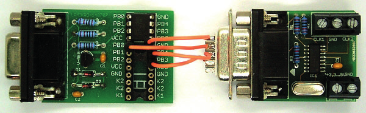
Radio Builder's Book
Figure 5.15: The populated PCB.
5.6 A Programable Crystal Oscillator
If you ever need a quartz crystal for a very specific frequency, it’s often not available.
Some frequencies can’t be purchased at all. Custom-made crystals are always an option,
but they are very expensive as a one-off. What is required in this case is a programmable
quartz oscillator. The CY27EE16 chip is ideal for this application and was used, for exam-
ple, in the Elektor-SDR (Section 8.6). Unfortunately, this chip is no longer manufactured.
Modul-Bus produce a programmable clock oscillator board using the ICS307-2 chip which
outputs a frequency in the range from 2 to 120 MHz. This chip, however, lacks the ability
to store a selected frequency. All you need to remedy this shortfall is to add a tiny low-cost microcontroller like the ATiny13 which can be used to store a setting and use it on the next power-up. That will now give you a usable and programmable quartz generator.
Figure 5.16: Controlled by an ATiny13.
The ATiny13 here directly generates the three interface signals Data, SCLK, and Strobe
of the clock generator PCB. In our initial test, the DB9 plug was used, i.e., the port lines directly replace the corresponding output lines of the RS232. Now, the ATiny13 must send
exactly the data that was previously supplied by the PC. Altogether, the frequency required
is contained in three control bytes, giving 24 bits in total. These bytes are either directly received and clocked into the generator or loaded into the EEPROM of the ATiny13, where
they are read out at the next start.
● 88
Radio Builders Book - UK.indd 88
29-06-2023 16:09
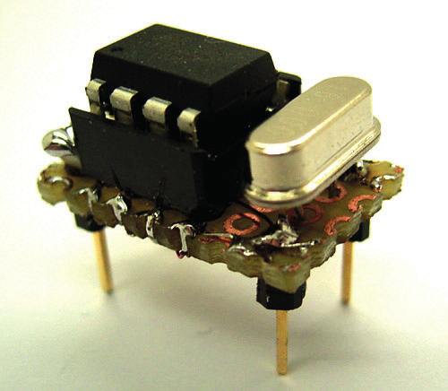
Chapter 5 • RF Oscillators
Data transfer to the clock oscillator PCB is performed by the handy Bascom command
Shiftout to transfer the three relevant bytes. After that, a strobe pulse is generated with
Pulseout. A software UART running at 9600 baud takes care of data reception. A command
word is required to be prefixed to the three data bytes B1, B2, and B3. The command word
tells the processor what to do with the 3 data bytes. The value 65 indicates the data is for direct output while 66 indicates it’s for storage in the EEPROM. These three bytes stored
at addresses 10, 11, and 12 in the EEPROM are read at each restart and clocked into the
oscillator chip.
Figure 5.17: Setting up the desired frequency.
The original program for setting the output frequency now needs to be modified to send
four bytes over the RS232 interface. The example shown here sets a frequency of 27.12
MHz, for which the three control bytes 60, 165, and 176 were determined. The frequency
can be set using the slider control or by entering the desired frequency into the field and
transferring it to the slider via the Set button. The VB software and ATiny13 firmware are
available on the author’s website.
Figure 5.18: The ATiny13 and crystal.
● 89
Radio Builders Book - UK.indd 89
29-06-2023 16:09
Radio Builder's Book
In order to use the programmable quartz oscillator in the same way as regular quartz os-
cillators with four pins in a DIP14 package, it was placed on a small piece of double-sided
perf board (a.k.a. stripboard or Veroboard). The standard pin assignment was adopted,
but now the RXD input is connected to Pin 1. Only this one pin is needed to reprogram the
generator. The microcontroller is located on the top side, and the PLL chip is on the bottom side of the board.
5.7 CW Transmitter with an EL95
Figure 5.19: The homebrew tube transmitter. ((txEL951))
You may wonder what sort of rigs amateur radio enthusiasts were using back in the 1950s
when vacuum tubes were the order of the day. Well, many radio amateur rigs at that time
were made up of a tube Audion type regen receiver (0V2) and a small transmitter, with an
EL84 tube in the final output stage. I built something similar to that myself. By the time
I sat my license exam, I had already skipped a few steps beyond the basic receivers and
transmitters. As a result, I never actually got to use a 0V2 and a small tube transmitter. To make up for the gap in my ham radio apprenticeship I thought it was about time I took a
look at the design, just to see how well it performs.
● 90
Radio Builders Book - UK.indd 90
29-06-2023 16:09
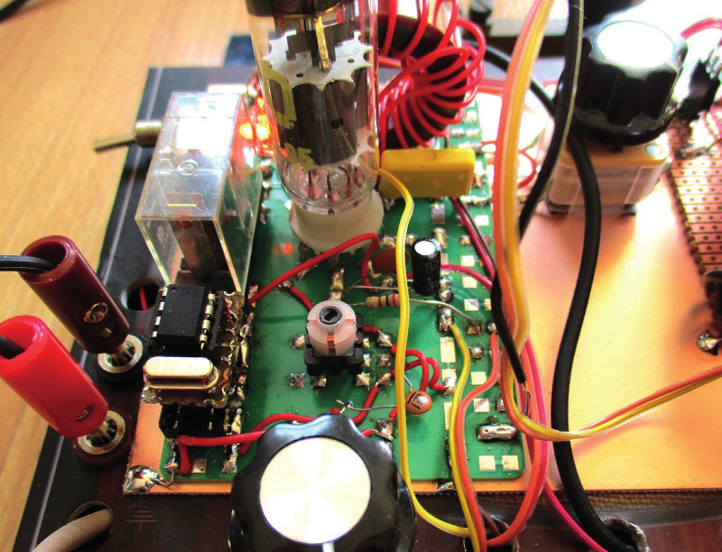
Chapter 5 • RF Oscillators
Figure 5.20: The HT voltage supply.
At first, I thought it would be easy to modify an old tube radio for that purpose. A small
Grundig radio was already on my radar, but the set still works so beautifully I couldn’t
bring myself to cannibalize it. I then decided to build the necessary power supply myself. I already had two suitable transformers. By connecting the two secondary windings together
the first transformer gets the mains voltage down to 12 V and the second produces an
output of about 200 V at its primary winding to use for the HT supply. Using this method,
you don’t need to find a special transformer and everything can be installed in the Franzis
shortwave radio enclosure.
Figure 5.21: The output stage.
● 91
Radio Builders Book - UK.indd 91
29-06-2023 16:09
Radio Builder's Book
A prototyping test board was used to build the tube stage. The board is designed for sev-
en-pin miniature sockets which can accept a 6AQ5A (= EL90). Despite its small size this
tube can handle an anode power dissipation of 12 W, just like the much larger EL84. With
this tube, I was able to generate up to 5 W at 3.5 MHz. The EL95 is pin-compatible and
delivers 3.5 W using the same circuit configuration.
Figure 5.22: Schematic of the CW transmitter.
The complete crystal-stabilized transmitter circuit shown above uses cathode keying. The
carrier signal which I set to 3560 kHz is generated by the programmable crystal generator
described in the last section. When 5 V is applied to VCC, the RF signal is generated at the output. The tuned grid circuit boosts the signal to about 20 Vpp.
A small neon lamp indicates the anode HT voltage. An LED lights when the toggle switch
is set to transmit. The relay then pulls in and applies 5 V to the quartz oscillator. During transmission, a DC voltage is also applied to the antenna output which activates an external relay to switch the transmitting antenna. A DC voltage is also applied to the antenna cable
to the receiver, which is used for signal muting.
● 92
Radio Builders Book - UK.indd 92
29-06-2023 16:09
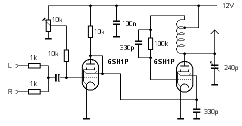
Chapter 5 • RF Oscillators
Figure 5.23: The transmitter in operation.
The coil in the anode circuit is made up of 20 turns on a toroidal ferrite core with a sec-
ondary winding of 3 turns to ensure antenna matching and necessary isolation from the
anode HT voltage. An additional Pi-filter at the output is for matching and provides further harmonic suppression. This is useful when other frequency bands are used.
A small 5 V/0.4 A filament lamp (vintage bicycle headlamp) primarily serves to dissipate
some of the heat generated inside the case. The transformer outputs 12 V, which means
the voltage regulator needs to dissipate a lot of power to provide 6.3 V at 450 mA for the